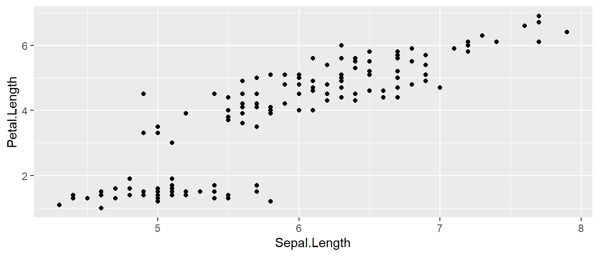
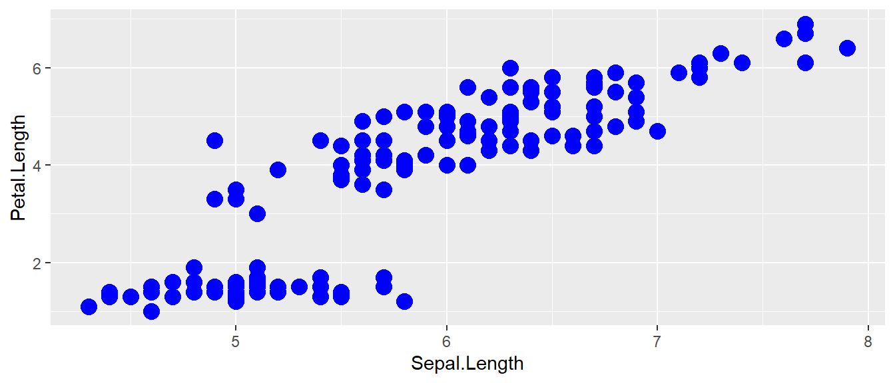
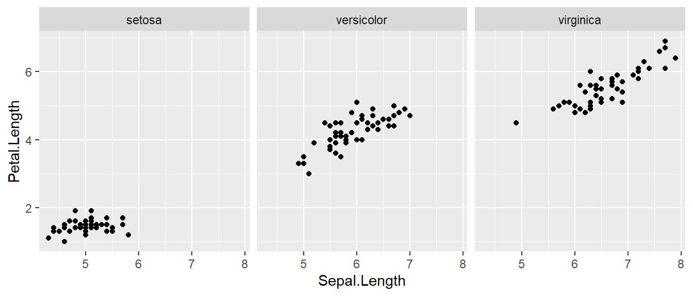
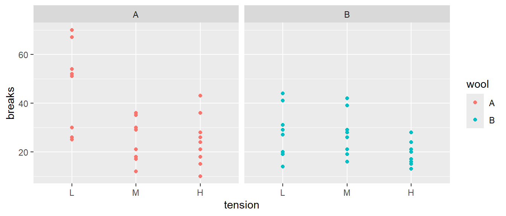
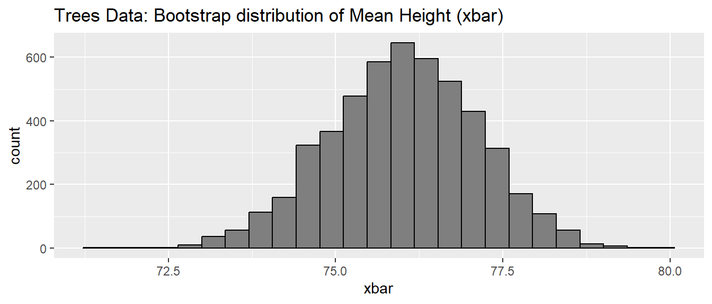
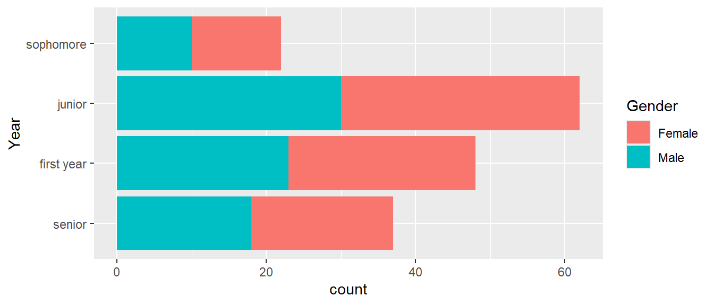

Preface
This book is intended for use during the STA 444/445 courses at Northern Arizona University. The book is broken into two sections based on the related course material. The STA 444 section covers basic introductory content for getting started with statistical programming in R. This course is intended for students of all backgrounds and pairs importantly with courses such as STA 570 (Statistical Methods I) and STA 471 (Regression Analysis). The first section covers details to allow students to work on basic statistical programming while developing simple PDF documents using R-Markdown. This can both improve the students ability to digest complex statistical topics while also providing them a method for distributing their work in high-quality PDF formats.
The second section entitled STA 445 dives deeper into issues that commonly arise in many data wrangling situations. The section is intended for more advanced students over the secondary 10-week period as a follow-up to STA 444. The chapters within cover a variety of more complex details related to Data Scene and Statistical Methodology. The intention of STA 445 is to support the BS Data Science program at Northern Arizona University, but provides a tangible enough workload to be applicable to many students looking to advanced their Data Science knowledge within R.
Other Resources
There are a great number of very good online and physical resources for learning R. Hadley Wickham is the creator of many of the foundational packages we’ll use in this course and he has worked on a number of wonderful teaching resources:
Hadley Wickham and Garrett Grolemund’s free online book R for Data Science. This is a wonderful introduction to the
tidyverseand is free. If there is any book I’d recommend buying, this would be it. Many of the topics my book covers are perhaps better covered in Hadley and Garrett’s book. For people brand new to R, R for Data Science probably has the wrong presentation order.Hadley Wickham and Jenny Bryan have a whole book on R packages to effectively manage large projects.
Finally Hadley Wickham also has a book about Advanced R programming and is quite helpful in understanding deeper issues relating to Object Oriented programming in R, Environments, Namespaces, and function evaluation.
There are a number of other resources out there that quite good as well:
Michael Freeman’s book Programming Skills for Data Science. This book covers much of what we’ll do in this class and is quite readable.
Roger Peng also has an online book R programming for Data Science introducing R.
Source and Error Reports
The source documents for this book live on GitHub at https://github.com/BuscagliaR/STA_444_v2/. There you can can make bug reports or clone the GitHub repository, and submit fixes via pull requests. I welcome feedback and suggestions for improvement. The most likely way to get fixes introduced quickly is to email me directly at robert.buscaglia@nau.edu.
Acknowledgments
A very large thanks to Dr. Derek Sonderegger for developing the first version of this textbook that has been widely used within the Department of Mathematics and Statistics at Northern Arizona University. I hope to continue to expand upon this easy-to-use and informative textbook that is an excellent first source for many undergraduate and graduate students interested in furthering their Statistical and Data Science skills.
1 Familiarization
Throughout this textbook, we will include links to a variety of video lectures developed by the original author Dr. Derek Sonderegger. The video lectures add useful additional details to the content of this textbook. At this time, the video lectures have not been updated but may be changed in future updates.
The video lecture for this chapter can be found here: Video Lecture
R is a open-source program that is commonly used in statistics and machine learning. It runs on almost every platform and is completely free and is available at www.r-project.org. Most cutting-edge statistical research is first available on R.
The basic editor that comes with R works fairly well, but but it is strongly recommended that you run R through the program RStudio which is available at rstudio.com. This is a completely free Integrated Development Environment that works on Macs, Windows and a couple of flavors of Linux. It simplifies a bunch of more annoying aspects of the standard R GUI and supports useful things like tab completion.
R is a script based language, and there isn’t a point-and-click interface for data wrangling and statistical modeling. While initially painful, writing scripts leaves a clear and reproducible description of exactly what steps were performed. This is a critical aspect of sharing your methods and results with other students, colleagues, and the world at-large.
1.1 A Basic Script
The simplest form for developing and executing code is a script file. A script file can be loaded within R studio by selecting File -> New File -> R Script. It is encouraged to develop and run code within a script file first, before placing code into an RMD file. A script file only executes R code, such as that of an R-chunk discussed below. However, the script file does not compile any of the other items an Rmarkdown file will use, and thus is a safe and easy way to check if your statistical code is working. If you are getting errors when compiling an Rmarkdown file, ensure that all of your statistical code is properly working first by executing within a basic script file. This can help you decide if the error is coming from Markdown (latex, etc…) or if you have a flaw in your solution.
1.2 Working within an Rmarkdown File
The first step in any new analysis or project is to create a new Rmarkdown file. This can be done by selecting the File -> New File -> R Markdown... drop down option and a menu will appear asking you for the document title, author, and preferred output type. In order to create a PDF, you’ll need to have LaTeX installed, but the HTML output nearly always works and I’ve had good luck with the MS Word output as well. All university computers have software prepared for compiling latex documentation. A section has been added to the end of this textbook to help setup personal computers with a lightweight package known as tinytex for compiling PDF documents.
R-Markdown (RMD) is an implementation of the Markdown syntax that makes it extremely easy to write documents and give instructions for how to do typesetting, introduce graphics, display code, and write mathematical expressions. The syntax available to embed R commands directly into the document always for transparent and easy to follow statistical programming. Perhaps the easiest way to understand the syntax is to look at the RMarkdown website or the Help -> Rmarkdown Quick Reference drop down link in RStudio.

Once you’ve created a new Rmarkdown file, you’ll be presented with four different panes that you can interact with.
| Pane | Location | Description |
|---|---|---|
| Editor | Top Left | Where you edit the script. This is where you should write most all of your R code. You should write your code, then execute it from this pane. Because nobody writes code correctly the first time, you’ll inevitably make some change, and then execute the code again. This will be repeated until the code finally does what you want. |
| Console | Bottom Left | You can execute code directly in this pane, but the code you write won’t be saved. I recommend only writing stuff here if you don’t want to keep it. I only type commands in the console when using R as a calculator and I don’t want to refer to the result ever again. |
| Environment | Top Right | This displays the current objects that are available to you. I typically keep the data.frame I’m working with opened here so that I can see the column names. |
| Miscellaneous | Bottom Right | This pane gives access to the help files, the files in your current working directory, and your plots (if you have it set up to show here.) |

Whenever you create a new Rmarkdown document, it is populated with code and comments that attempts to teach new users how to work with Rmarkdown. Critically there are two types of regions:
| Region Type | Description |
|---|---|
| Commentary | These are the areas with a white background. You can write nearly anything here and in your final document it will be copied over. I typically use these spaces to write commentary and interpretation of my data analysis project. |
| Code Chunk | These are the grey areas. This is where your R code will go. When knitting the document, each code chunk will be run sequentially and the code in each chunk must run. |
In an R Markdown (RMD) document, R code is clearly separated from the regular text using three backticks along with an instruction indicating that it’s R code to be evaluated. You can easily insert a new R code chunk using the shortcut Ctrl+Alt+I on Windows or Cmd+Option+I on Mac, or by clicking the green insert button at the top of the RMD editor. You can also manually type the chunk delimiters. There are many chunk options available. The final output of an RMD document can be rendered in various formats, including HTML, PDF, or MS Word.
This entire book is created using R Markdown. To view the RMD file for any chapter, simply click the view source icon at the top of the online notes. This allows you to see the source code, which is especially useful if you want to copy and paste code into your own work, such as the exercises provided at the end of each chapter.
While writing an RMD file, each of the code chunks can be executed in a couple of different ways.
- Press the green arrow at the top of the code chunk to run the entire chunk.
- The run button has several options for running different amounts of code.
- There are keyboard shortcuts, on Windows use
Ctrl+Enter, on Mac useCmd+Return.
Finally, we want to produce a nice output document that combines the code, output, and commentary. To do this, you’ll knit the document which causes all of the R code to be run in a new R session, and then weave together the output into your document. This can be done using the knit button at the top of the Editor Window. Be mindful that the RMD file is a stand-alone document that must have all components necessary for the file to run. Anything that was loaded into local memory will not be seen when compiling the RMD file. For instance, if you need a particular data set available for the code to run, this must be coded into the RMD file, and not just loaded into local memory. These types of issues will become more familiar as you work through the examples and exercises available in this textbook.
When I was a graduate student, I had to tediously copy and paste tables of output from the R console and figures I had made into my Microsoft Word document. Far too often I would realize I had made a small mistake in part (b) of a problem and would have to go back, correct my mistake, and then redo all the laborious copying. I often wished that I could write both the code for my statistical analysis and the long discussion about the interpretation all in the same document so that I could just re-run the analysis with a click of a button and all the tables and figures would be updated by magic. That is what RMD does.
1.3 R as a simple calculator
Assuming that you have started R on whatever platform you like, you can use R as a simple calculator. In either your Rmarkdown file code chunk, an R script, or by running it within the console. Try running the following simple calculation in all three of the methods mentioned above:
## [1] 5In this fashion you can use R as a very capable calculator.
## [1] 48## [1] 64## [1] 2.718282R has most constants and common mathematical functions you could ever want. Functions such as sin(), cos(), are available, as are the exponential and log functions exp(), log(). The absolute value is given by abs(), and round() will round a value to the nearest integer while floor() and ceiling() will always round down or up as desired.
## [1] 3.141593## [1] 0## [1] 1.609438## [1] 0.69897Whenever I call a function, there will be some arguments that are mandatory, and some that are optional and the arguments are separated by a comma. In the above statements the function log() requires at least one argument, the number in which you want to log. However, the base argument is optional. If you do not specify what base to use, R will use a default value. You can see that R will default to using base \(e\) by looking at the help page by typing help(log) or ?log at the command prompt.
Arguments can be specified via the order in which they are passed or by naming the arguments. So for the log() function which has arguments log(x, base=exp(1)). If I specify which arguments are which using the named values, then order doesn’t matter.
## [1] 0.69897## [1] 0.69897But if we don’t specify which argument is which, R will decide that x is the first argument, and base is the second. It is suggested to use the order of options as presented in the help files. This will improve efficiency as you become more complex with your statistical programming. Notice when you use these shortcuts though, you will get different answers based on the order you enter values with provided specific option names!
## [1] 0.69897## [1] 1.430677When arguments are specified, notice the use of syntax such as name=value notation and a student might be tempted to use the <- notation here. Don’t do that as the name=value notation is making an association mapping and not a permanent assignment. Assignment of objects is one of the core ideas of using R, and is discussed more in the section below.
1.3.1 Assignment
We need to be able to assign a value to a variable to be able to use it later. R does this by using an arrow <- or an equal sign =. While R supports either, for readability, I suggest people pick one assignment operator and stick with it. I personally prefer to use the arrow and this is the most basic assignment possible. There are different levels of assignment available in R, so stick to the <- arrow as you get started. When assigning a new object, be mindful that variable names cannot start with a number, may not include spaces, and are case sensitive. Let’s practice by assigning the variable tau and my.test.var below, and using them in further computations.
tau <- 2*pi # create two variables
my.test.var = 5 # notice they show up in 'Environment' tab in RStudio!
tau## [1] 6.283185## [1] 5## [1] 31.41593As your analysis gets more complicated, you’ll want to assign the results to a variable so that you can access the results later. If you don’t assign the result to a variable, you have no way of accessing the result. Using object-oriented programming within R will have tremendous consequences when developing more complex code.
When a variable has been assigned, you will see it in the environment tab in the environment pane. This area is extremely convenient to remind ourselves how we spelled a variable name and capitalization. R is case sensitive so X and x are two different variable names, so being consistent in your capitalization scheme is quite helpful. The complexity of assignment names in R is also very useful, so that you can write out complex names for easy to recall functionality. A common theme is known as camel casing, where you write a longer name with each separate word capitalized, such as MyFirstFunction.
1.3.2 Vectors
While single values are useful, it is very important that we are able to make groups of values. The most fundamental aggregation of values is called a vector. In R, we will require vectors to always be of the same type (e.g. all integers or all character strings). To create a vector, we just need to use the concatenation function c(). This is a very common theme in R, so get used to using concatenation early! Below we create two vectors through concatenation, the first a vector of strings, the second a vector of constants.
## [1] "A" "A" "B" "C"## [1] 4 3 8 10It is very common to have to make sequences of integers, and R has a shortcut to do this. The notation A:B will produce a vector of constants starting with the value A and incrementally increasing by one until the value B. Here we quickly produce a vector of constants from 2 to 6.
## [1] 2 3 4 5 6Nearly every function in R behaves correctly when being given a vector of values. This is called vectorization and can make computations within R very fast if properly used. Vectorization is much faster than writing for-loops (learned in later chapters), so practice with vectors is very important. Notice we can feed a vector of constants to the log function, and it will calculate the log of each element of the vector.
## [1] 1.3862944 1.9459101 1.6094379 0.69314721.4 Packages
One of the greatest strengths about R is that so many people have developed add-on packages with additional functionality. For example, plant community ecologists have a large number of multivariate methods that are useful but were not part of R. So Jari Oksanen got together with some other folks and put together a package of functions that they found useful. The result is the package vegan.
To download and install the package from the Comprehensive R Archive Network (CRAN), you just need to ask RStudio it to install it. This can be done via the menu Tools -> Install Packages.... You can also use a console or script and the R function install.packages(). With either method, you just need to provide the name of the package and RStudio will download and install the package on your computer.
Many major analysis types are available via downloaded packages as well as problem sets from various books (e.g. Sleuth3 or faraway) and can be easily downloaded and installed from CRAN.
Once a package is downloaded and installed on your computer, it is available and does not need to be installed again. However, it is not loaded into your current R session by default. The reason it isn’t loaded is that there are thousands of packages, some of which are quite large and only used occasionally. So to improve overall performance only a few packages are loaded by default. When you want to use a specific package you must explicitly load them. You only need to load them once per session/script. After installing the vegan package, we can load the package into our environment using the library() function.
For a similar performance reason, many packages do not automatically load their data sets unless explicitly asked. Therefore when loading data sets from a package, you might need to do a two-step process of loading the package and then loading the data set.
##
## Attaching package: 'faraway'## The following object is masked from 'package:lattice':
##
## melanomaIf you don’t need to load any functions from a package and you just want the data, you can do it in one step.
data('butterfat', package='faraway') # just load the data set, not anything else
head(butterfat) # print out the first 6 rows of the data## Butterfat Breed Age
## 1 3.74 Ayrshire Mature
## 2 4.01 Ayrshire 2year
## 3 3.77 Ayrshire Mature
## 4 3.78 Ayrshire 2year
## 5 4.10 Ayrshire Mature
## 6 4.06 Ayrshire 2yearSimilarly, if I am not using many functions from a package, I might choose call the functions using the notation package::function(). This is particularly important when two packages both have functions with the same name and it gets confusing which function you want to use. For example the packages mosaic and dplyr both have a function tally. When such a conflict occurs, you may notice R provides a warning that certain functions have been masked. This is a not an error, instead a message informing you that more than one function of the same name is present. These messages were purposefully left in the sections above so you can observe their behavior. For example, if the dplyr package is loaded but you want to use the mosaic::tally() function, you can introduce the following syntax so that R knows which version of tally() you want to execute.
## Registered S3 method overwritten by 'mosaic':
## method from
## fortify.SpatialPolygonsDataFrame ggplot2## X
## 0 1 2
## 3 4 1Finally, many researchers and programmers host their packages on GitHub (or equivalent site) and those packages can easily downloaded using tools from the devtools package, which can be downloaded from CRAN. In later chapters of the STA 445 section, we will learn to host our own R packages through GitHub. These can then be installed directly from a github repository using the install_github() function. Below installs a demo package we will build in later Chapters. Remember, if you want to execute the code below, you’ll likely need to install the devtools package first!
1.5 Finding Help
There are many complicated details about R and nobody knows everything about how each individual package works. As a result, a robust collection of resources has been developed and you are undoubtedly not the first person to wonder how to do something.
1.5.1 How does this function work?
If you know the function you need, but just don’t know how to use it, the built-in documentation is really quite good. Suppose I am interested in how the rep function works. We could access the rep help page by searching in the help window or from the console via help(rep). The document that is displayed shows what arguments the function expects and what it will return. At the bottom of the help page is often a set of examples demonstrating different ways to use the function. As you get more proficient in R, these help files become quite handy, but initially they feel quite overwhelming.
1.5.2 How does this package work?
If a package author really wants their package to be used by a wide audience, they will provide a “vignette”. These are a set of notes that explain enough of how a package works to get a user able to utilize the package effectively. This documentation is targeted towards people the know some R, but deep technical knowledge is not expected. Whenever I encounter a new package that might be applicable to me, the first thing I do is see if it has a vignette, and if so, I start reading it. If a package doesn’t have a vignette, I’ll Google “R package XXXX” and that will lead to documentation on CRAN that gives a list of functions in the package.
1.5.3 How do I do XXX?
Often I find myself asking how to do something but I don’t know the function or package to use. In those cases, I will use the coding question and answer site stackoverflow. This is particularly effective and I encourage students to spend some time to understand the solutions presented instead of just copying working code. By digging into why a particular code chunk works, you’ll learn all sorts of neat tricks and you’ll find yourself utilizing the site less frequently.
1.6 Exercises
Create an RMarkdown file that solves the following exercises.
Calculate \(\log\left(6.2\right)\) first using base \(e\) and second using base \(10\). To figure out how to do different bases, it might be helpful to look at the help page for the
logfunction.Calculate the square root of 2 and save the result as the variable named sqrt2. Have R display the decimal value of sqrt2. Hint: use Google to find the square root function. Perhaps search on the keywords “R square root function”.
This exercise walks you through installing a package with all the data sets used in the textbook The Statistical Sleuth.
- Install the package
Sleuth3on your computer using RStudio. - Load the package using the
library()command. - Print out the data set
case0101.
- Install the package
2 Data Frames
# It is good practice to load the packages important to the RMD file at the top of
# the script. Extra syntax is provided here that suppresses the output of messages,
# of which some packages have extraordinary long message outputs (such as tidyverse).
# For this chapter we might want to load some common packages: dplyr, ggplot2,
# forcats, readr, and stringr. Lets load the packages from the `tidyverse` suite, but
# suppress the tidyverse message output. In future chapters, I will only show the packages
# necessary for that chapter. You may hide this information in your own script/RMD files.
suppressPackageStartupMessages({
library(tidyverse, quietly = TRUE)
})Dr. Sonderegger’s Video Companion: Video Lecture.
2.1 Data Frames
Data frames are the fundamental unit of data storage that casual users of R need to work with. Conceptually they are just like a single tab in a spreadsheet (e.g. Excel) file. There are multiple rows and columns and each column is of the same type of information (e.g. numerical values, dates, or character strings) and each row represents a single observation.
Because the columns have meaning and we generally give them column names, it is desirable to want to access an element by the name of the column as opposed to the column number. While writing formulas in large Excel spreadsheets I often
get annoyed trying to remember which column something was in and muttering “Was total biomass in column P or Q?” A system where I could just name the column Total_Biomass and then always refer to it that way, is much nicer to work with and I make fewer mistakes.
In this chapter we will briefly cover the minimal set of tools for working with data frames. First we discuss how to import data sets, both from packages and appropriately formatted Excel and .csv files. Finally we’ll see how to create a data frame “by hand” and to access columns and do simple manipulations.
In this chapter, we will focus on standard R data frame manipulations so that readers gain basic familiarity with non-tidyverse accessor methods. This is our first building block before moving to more advanced functionality. When in doubt, there are always base-R methods to a solution, but we will find that R pacakges can make our life much easier when used properly!
2.2 Introduction to Importing Data
2.2.1 From a Package
For many students, they will be assigned homework that utilizes data sets that are stored in a package. To access those, we would need to first install the package if we haven’t already. Recall to do that, we can use the Rstudio menu bar Tools -> Install Packages... mouse action or the install_packages() function.
Because we might have thousands of packages installed on a computer, and those packages might all have data sets associated with them, they aren’t loaded into memory by default. Instead we have to go through a two-step process of making sure that the package is installed on the computer, and then load the desired data set into the local session of R. Once the package is installed, we can load the data into our session via the following command:
Because R tries to avoid loading datasets until it is sure that you need them,the object alfalfa isn’t initially loaded as a data.frame but rather as a “promise” that it eventually will be loaded whenever you first use it. So lets first access it by viewing it.
There are two ways to enter the view command. Either executing the View() function from the console, or clicking on either the white table or the object name in the Environment tab. It is encouraged to remove any View() functions from your final RMD files, as this will consistently open the data set you are trying to view. Instead, use View() to digest the data, then remove this from your RMD file to not have negative impacts on your final “knit” document.
2.2.2 Import from .csv or .xls files
Often times data is stored in a Comma Separated Values (CSV) file where the rows in the file represent the data frame rows, and the columns are separated by commas. The first row of the file is usually the column titles. Alternatively, the data might be stored in an Excel file and we just need to tell R where the file is and which worksheet tab to import.
The hardest part for people that are new to programming is giving the path to the data file. In this case, I recommend students use the data import wizard that RStudio includes which is accessed via File -> Import Dataset. This will then give you a choice of file types to read from (.csv files are in the “Text” options). Once you have selected the file type to import, the user is presented with a file browser window where the desired file should be located. Once the file is chosen, we can import the file.
Critically, we should notice that the import wizard generates R code that does the actual import. We MUST copy that code into our Rmarkdown file or else the import won’t happen when we try to knit the Rmarkdown into an output document because knitting always occurs in a completely fresh R session. So only use the import wizard to generate the import code! The code generated by the import wizard ends with a View() command and I typically remove that as it can
interfere with the knitting process. The code that I’ll paste into my RMarkdown file typically looks like this (be mindful you have no way to run code that requires access to my dropbox, this is just an example):
library(readxl)
Melioid_IgG <- read_excel("~/Dropbox/NAU/MAGPIX serology/Data/Melioid_IgG.xlsx")
# View(Melioid_IgG)A nice property of working within an RMD file is that the working directory is set to be the same folder of which the RMD file is present. This can make loading data smoother and is another important reason for using projects and R-markdown files to improve efficiency. You may also wish to try loading the data using simple commands such as read.csv() within your script/RMd file, by placing the data file adjacent to your .rmd file. These types of ideas will be covered in more advanced sections later in the textbook, for now feel free to use the import wizard mentioned above, just be sure to copy the code into your RMD file!
2.3 Data Types
Data frames are required that each column have the same type. That is to say, if a column is numeric, you can’t just change one value to a character string. Below are the most common data types that are used within R.
Integers - These are the integer numbers \(\left(\dots,-2,-1,0,1,2,\dots\right)\). To convert a numeric value to an integer you may use the function
as.integer().Numeric - These could be any number (whole number or decimal). To convert another type to numeric you may use the function
as.numeric().Strings - These are a collection of characters (example: Storing a student’s last name). To convert another type to a string, use
as.character().Factors - These are strings that can only values from a finite set. For example we might wish to store a variable that records home department of a student. Since the department can only come from a finite set of possibilities, I would use a factor. Factors are categorical variables, but R calls them factors instead of categorical variable. A vector of values of another type can always be converted to a factor using the
as.factor()command. For converting numeric values to factors, I will often use the functioncut().Logicals - This is a special case of a factor that can only take on the values
TRUEandFALSE, sometimes referred to as Boolean. (Be careful to always capitalizeTRUEandFALSE. Because R is case-sensitive, TRUE is not the same as true.) Using the functionas.logical()you can convert numeric values toTRUEandFALSEwhere0isFALSEand anything else isTRUE.
Depending on the command, R will coerce your data from one type to another if necessary, but it is a good habit to do the coercion yourself. If a variable is a number, R will automatically assume that it is continuous numerical variable. If it is a character string, then R will assume it is a factor when doing any statistical analysis. It is always good practice to double check that R is using the data as intended, as this can have major consequences in statistical modeling, where a continuous variable behaves much differently than a categorical variable. Such cases can arise if a value like 1 is actually denoting a group and not a numerical value.
Most of these types are familiar to beginning R users except for factors. Factors are how R keeps track of categorical variables. R does this in a two step pattern. First it figures out how many categories there are and remembers which category an observation belongs. Second, it keeps a vector of character strings that correspond to the names of each of the categories.
## [1] "B" "B" "A" "A" "C"## Factor w/ 3 levels "A","B","C": 2 2 1 1 3Notice that the vector z is actually the combination of group assignment vector 2,2,1,1,3 and the group names vector “A”,”B”,”C”. So we could convert z to a vector of numerics or to a vector of character strings.
## [1] 2 2 1 1 3## [1] "B" "B" "A" "A" "C"Often we need to know what possible groups there are, and this is done using the levels() command.
## [1] "A" "B" "C"Notice that the order of the group names was done alphabetically, which we did not chose. This ordering of the levels has implications when we do an analysis or make a plot and R will always display information about the factor levels using this order. It would be nice to be able to change the order. Also it would be really nice to give more descriptive names to the groups rather than just the group code in my raw data. Useful functions for controlling the order and labels of the factor can be found in the forcats package. We will learn how to manipulate factors more in a later chapter, but it is never too early to play around!
2.4 Basic Manipulation
Occasionally I’ll need to create a small data frame “by hand” to facilitate creating graphs in ggplot2. In this final section, we’ll cover creating a data frame and doing simple manipulations using the base R commands and syntax. To create a data frame, we have to squish together a bunch of column vectors. The command data.frame() does exactly that. The example below provides the names, ages, and heights (in inches) of the Sonderegger family (the Buscaglia family is too small of an example to be useful).
family <- data.frame(
Names = c('Derek', 'Aubrey', 'Elise', 'Casey'),
Age = c(42, 39, 6, 3),
Height.in = c(64, 66, 43, 39)
)
family## Names Age Height.in
## 1 Derek 42 64
## 2 Aubrey 39 66
## 3 Elise 6 43
## 4 Casey 3 39To access a particular column, we could use the $ operator. We could then do something like calculate the mean or standard deviation. Here are some examples of using the $ operator for statistical computation.
## [1] 42 39 6 3## [1] 22.5## [1] 20.85665As an alternative to the “$” operator, we could use the [row, column] notation. The first dimension of an array is always the row, the second always the column, and this can go up further (3rd, 4th, 5th) dimension if working with more complex data. Always remember - first entry is the row, second entry the column! To select a particular row or column, we can select them by either name or location.
## [1] 42 39 6 3## [1] 39## [1] 42 39 6 3## Names Age Height.in
## 1 Derek 42 64Next we could calculate everyone’s height in centimeters by multiplying the heights by 2.54 and saving the result in column appropriately named. Notice the syntax provided below actually creates a new column!
family$Height.cm <- family$Height.in * 2.54 # calculate the heights and save them!
family # view our result!## Names Age Height.in Height.cm
## 1 Derek 42 64 162.56
## 2 Aubrey 39 66 167.64
## 3 Elise 6 43 109.22
## 4 Casey 3 39 99.062.5 Exercises
Create a data frame “by hand” with the names, ages, and heights of your own family. If this feels excessively personal, feel free to make up people or include pets.
Calculate the mean age among your family.
We can load data directly from the internet. Dr. Sonderegger has many spreadsheet files hosted on GitHub. Lets use this file https://raw.githubusercontent.com/dereksonderegger/570L/master/data-raw/Example_1.csv. Because the
readrpackage doesn’t care whether a file is on your local computer or on the Internet, we’ll use this file by downloading it directly through our R code.- Start the import wizard using:
File -> Import Dataset -> From Text (readr) ...and input the above web URL. Click the update button near the top to cause the wizard to preview the result. - Save the generated code to your Rmarkdown file and show the first few rows using the
head()command.
- Start the import wizard using:
3 Graphing
In this chapter you will learn more about the ggplot2 package, part of the tidyverse suite of packages.
Dr. Sonderegger’s Video Companion: Video Lecture.
3.1 Introduction to ggplot2 graphics
There are three major “systems” of making graphs in R. The basic plotting commands in R are quite effective but the commands do not have a way of being combined in easy ways, often requiring loops or functions to produce complex multi-layered graphs. Lattice graphics (which the mosaic package uses) makes it possible to create some quite complicated graphs but it is very difficult to make non-standard graphs. The package we will focus on here, ggplot2, tries to not anticipate what the user wants to do, but rather provide the mechanisms for pulling together different graphical concepts and the user gets to decide which elements to combine. This will allow a user to create almost any graphic of interest.
To make the most of ggplot2 it is important to wrap your mind around “The Grammar of Graphics”. Briefly, the act of building a graph can be broken down into three steps.
Define what data set we are using.
What is the major relationship we wish to examine?
In what way should we present that relationship? These relationships can be presented in multiple ways, and the process of creating a good graph relies on building layers upon layers of information.
For example, after preparing a proper data frame for the analysis, we may want to present a linear model result including both the data, best-fit line, and other statistical intervals (confidence, prediction). We might start with printing the raw data as a scatter graphic. We can then add additional layers such as an overlay of the regression line over the top of the scatter. We can then continue this thinking for as many layers as we want, producing a final graphic that conveys important information clearly.
By producing code that outputs these graphics, we can then introduce small changes as needed to improve them as our needs grow. Although the first version of the graph may take some time to prepare, once code is stored in a script, it becomes easy to update and improve the graphic over time. This is an essential part of work that is done in research laboratories or for publications, and being able to easily handle the updates needed to a graphic can not only save time, but help you prepare the exact graphic needed to tell your story!
Next, it should be noted that ggplot2 is designed to act on data frames. It is actually hard to just draw three data points and for simple graphs it might be easier to use the base graphing system in R. However for any real data analysis project, the data will already be in a data frame and this is not an annoyance. Throughout this textbook, you will become very comfortable with formatting data into data frames.
These notes are sufficient for creating simple graphs using ggplot2, but are not intended to be exhaustive. There are many places online to get help with ggplot2. One very nice resource is the website, http://www.cookbook-r.com/Graphs/, which gives much of the information available in the textbook R Graphics Cookbook which I highly recommend. Second is just using Google to solve your problems and see what you can find on websites such as StackExchange. As you become more advanced in your knowledge of preparing figures through ggplot2, generative AI sources such as chatGPT can help produce the syntax outline that you can then manipulate to create the exact graphic of interest.
One way that ggplot2 makes it easy to form very complicated graphs is that it provides a large number of basic building blocks that, when stacked upon each other, can produce extremely complicated graphs. A full list is available at https://ggplot2.tidyverse.org/reference/. The following list gives some idea of different building blocks that are most commonly used. These different geometries offer different ways to display the relationship between variables and can be combined in many interesting ways. We will explore several geometries in this chapter and future graphing chapters.
| Geom | Description | Required Aesthetics |
|---|---|---|
geom_histogram |
A histogram | x |
geom_bar |
A barplot (y is number of rows) | x |
geom_col |
A barplot (y is given by a column) | x, y |
geom_density |
A density plot of data. (smoothed histogram) | x |
geom_boxplot |
Boxplots | x, y |
geom_line |
Draw a line (after sorting x-values) | x, y |
geom_path |
Draw a line (without sorting x-values) | x, y |
geom_point |
Draw points (for a scatterplot) | x, y |
geom_smooth |
Add a ribbon that summarizes a scatterplot | x, y |
geom_ribbon |
Enclose a region, and color the interior | ymin, ymax |
geom_errorbar |
Error bars | ymin, ymax |
geom_text |
Add text to a graph (with box) | x, y, label |
geom_label |
Add text to a graph (without box) | x, y, label |
geom_tile |
Create Heat map | x, y, fill |
A graph can be built up layer by layer, where:
- Each layer corresponds to a geometry (
geom), each of which requires a data set and a mapping between an aesthetic (aes) and a column of the data set.- If you don’t specify the data or aesthetic within a geometry, then the layer inherits everything defined in the primary
ggplot()command. - You can have different data sets for each layer!
- If you don’t specify the data or aesthetic within a geometry, then the layer inherits everything defined in the primary
- Layers can be added with a
+, or you can define two plots and add them together (second one over-writes anything that conflicts).
3.2 Basic Graphs
3.2.1 Scatterplots
To start with, we’ll make a very simple scatterplot using the iris data set. The iris data set contains observations on three species of iris plants where we’ve measured the length and width of both the petals and sepals. We will make a scatterplot of Sepal.Length versus Petal.Length, which are two columns in the data set. First, lets recall how to load a data set into our local environment. We then show the structure (str) of the data set to understand its data types and get a clear listing of the variables present in the data frame
data(iris) # load the iris data set that comes with R
str(iris) # what columns do we have to play with...## 'data.frame': 150 obs. of 5 variables:
## $ Sepal.Length: num 5.1 4.9 4.7 4.6 5 5.4 4.6 5 4.4 4.9 ...
## $ Sepal.Width : num 3.5 3 3.2 3.1 3.6 3.9 3.4 3.4 2.9 3.1 ...
## $ Petal.Length: num 1.4 1.4 1.3 1.5 1.4 1.7 1.4 1.5 1.4 1.5 ...
## $ Petal.Width : num 0.2 0.2 0.2 0.2 0.2 0.4 0.3 0.2 0.2 0.1 ...
## $ Species : Factor w/ 3 levels "setosa","versicolor",..: 1 1 1 1 1 1 1 1 1 1 ...We then make our first graphic using a single line of ggplot2 syntax.

- All ggplot graphics start with the
ggplot()command. - The data set we wish to use is specified using
data=iris. - The relationship we want to explore is
x=Sepal.Lengthandy=Petal.Length. This means the x-axis will be the Sepal Length and the y-axis will be the Petal Length. To use data directly from the initial data frame, we must always include this mapping within theaes()command. - The way we want to display this relationship is through graphing 1 point for every observation (scatter). Thus we map this information into the scatter graph geometry known as
geom_point().
We can define other attributes that might reflect other aspects of the data. For example, we might want for the color of the data point to change dynamically based on the species of iris. We can update our graph by including a second aesthetic (aes()) within the geom_point() specifically. Below we add a color option based on the species of iris. Notice below that by coloring the graph by species, we gain significant new information regarding how differences between the iris species.
Let’s take a moment to think about the aes() command inside the previous section of code, which can be quite mysterious to new users. The way to think about the aes() is that it gives you a way to define relationships that are dependent on the data frame (here data=iris). In the previous graph, the x-value and y-value for each point was defined dynamically by the data, as was the color. If we just wanted all the data points to be colored blue and larger, then the following code would do that

The important part isn’t that color and size were defined in the geom_point() but that they were defined outside of an aes() function! Notice though by removing the dependence to the species, we have lost the ability to see how different each species behaves!
A few quick notes on the use of aesthetics:
- Anything set inside an
aes()command will be of the formattribute=Column_Nameand will change based on the data. We must always use theaes()command to extract information from the data frame. - Anything set outside an
aes()command will be in the formattribute=valueand will be fixed. This is used for static information that doesn’t depend on the data frame.
3.2.2 Box Plots
Boxplots are a common way to show a categorical variable on the x-axis and continuous on the y-axis. Lets evaluate the distribution of Petal.Length versus the Species of iris. The syntax works very similar to above, but now we will map the information into a boxplot geometry.

The boxes show the \(25^{th}\), \(50^{th}\), and \(75^{th}\) percentile and the lines coming off the box extend to the smallest and largest non-outlier observation. Boxplots are important for viewing information across different categorical groupings, and are often related to ANOVA-type statistical analyses. We will explore boxplots further in later chapters, as they are very common in all fields!
3.3 Faceting
The goal with faceting is to make many panels of graphics where each panel represents the same relationship between variables, but something changes between each panel. For example using the iris data set we could look at the relationship between Sepal.Length and Petal.Length again, but now instead of placing all information with color on a single graph, we can make one panel per species. Faceting allows for the introduction of even more variables within a single graph!
library(ggplot2)
ggplot(iris, aes(x=Sepal.Length, y=Petal.Length)) +
geom_point() +
# facet_grid( cols = vars(Species) ) # using vars() to dictate columns
# facet_grid( rows = vars(Species) ) #using vars() to dictate rows
facet_grid( . ~ Species ) # Formula notation y ~ x
The line facet_grid( formula ) tells ggplot2 to make panels, and the formula tells how to orient the panels. In R, formulas are always interpreted in the order y ~ x. Because I want the species to change as we go across a page (horizontally, commonly called the x-direction on a 2D-graph), but don’t have anything I want to change vertically (y-direction) we use . ~ Species to represent that. If we had wanted three graphs stacked vertically instead, we could use Species ~ .. Additional code is provided that allows the user to more specifically define columns (cols = vars(Species)). This syntax provides more control over the x- and y-direction, but the formula notation should become more familiar with experience in R.
For a second example, we look at a data set that examines the amount a waiter was tipped by 244 different parties. Covariates that were measured include the day of the week, size of the party, total amount of the bill, amount tipped, whether there were smokers in the group and the gender of the person paying the bill. Like always, lets load the data and explore the variables a bit, here we output the first 6 rows using the head() function.
## total_bill tip sex smoker day time size
## 1 16.99 1.01 Female No Sun Dinner 2
## 2 10.34 1.66 Male No Sun Dinner 3
## 3 21.01 3.50 Male No Sun Dinner 3
## 4 23.68 3.31 Male No Sun Dinner 2
## 5 24.59 3.61 Female No Sun Dinner 4
## 6 25.29 4.71 Male No Sun Dinner 4It is easy to look at the relationship between the size of the bill and the percent tipped. We use the flexible syntax of R to calculate the percent tip directly within the aes() command. We then plot the total bill against the tip/total_bill ratio (or percent tipped).
Next we investigate if there is a difference in tipping percent based on gender or day of the week by plotting this relationship for each combination of gender and day.
ggplot(tips, aes(x = total_bill, y = tip / total_bill, color=time )) +
geom_point( ) +
# facet_grid( day ~ sex ) # changing orientation emphasizes certain comparisons!
facet_grid( sex ~ day )
It doesn’t seem there is much difference between the genders, but we would like to investigate the relation to day of week further. Sometimes we want multiple rows and columns of the facets, but there is only one categorical variable with many levels. Rather than making the graph grow very long either horizontally or vertically, we use facet_wrap() which takes a one-sided formula and will wrap in both the x- and y-directions automatically.
ggplot(tips, aes(x = total_bill, y = tip / total_bill )) +
geom_point() +
# facet_grid( . ~ day) # Four graphs in a row, Too Squished left/right!
facet_wrap( ~ day ) # spread graphs out both left/right and up/down.Finally we can allow the x and y scales to vary between the panels by setting “free”, “free_x”, or “free_y”. In the following code, the y-axis scale changes for each day in the data set.
3.4 Annotation
3.4.1 Axis Labels and Titles
To make a graph more understandable, it is necessary to tweak the axis labels and add a main title and such. Lets return to the iris data set example, but improve the quality of our scatter graph. The code below introduces lots of new syntax that changes the written text in many areas of the graph. You could either call the labs() command repeatedly with each label, or you could provide multiple arguments to just one labs() call. For readability, the lines have been separated in the code below.
# Assign the graph to the object 'p' allowing us to add more later.
P <-
ggplot( data=iris, aes(x=Sepal.Length, y=Petal.Length, color=Species) ) +
geom_point( ) +
labs( title='Sepal Length vs Petal Length' ) +
labs( x="Sepal Length (cm)", y="Petal Length (cm)" ) +
labs( color="Species Name") +
labs( caption = "Iris data from Edgar Anderson (1935)" )
# Print out the plot
P3.4.2 Text Labels
One way to improve the clarity of a graph is to remove the legend and, instead, label the points directly on the graph. For example, we could instead have the species names near the cloud of data points for the species.
Usually our annotations aren’t stored in the data frame that contains our data of interest. So we need to either create a new (usually small) data frame that contains all the information needed to create the annotation or we need to provide all necessary information within the syntax. It is encouraged to make additional, smaller data frames, that store auxiliary information such as annotations as these can be easily changed without interfering with the syntax making the graphs. Either way, we need to specify the x and y coordinates, and the label to be printed, as well as any other attribute that is set in the global aes() command. That means if color has been set globally, the annotation layer also needs to address the color attribute.
3.4.2.1 Using a data frame
To do this in ggplot, we need to make a data frame that has the columns Sepal.Length and Petal.Length so that we can specify where each label should go, as well as the label that we want to print. This is essentially indicating where on the x-y graph the text should be located. Also, because color is matched to the Species column, this small data set should also have a the Species column.
This step always requires a bit of fussing with the graph because the text size and location should be chosen based on the size of the output graphic and if I rescale the image it often looks awkward. Typically I leave this step until the figure is being prepared for final publication.
# create another data frame that has the text labels I want to add to the graph.
annotation.data <- data.frame(
Sepal.Length = c(4.5, 6.5, 7.0), # Figured out the label location by eye.
Petal.Length = c(2.25, 3.75, 6.5), # If I rescale the graph, I would redo this step.
Species = c('setosa', 'versicolor', 'virginica'),
Text = c('SETOSA', 'VERSICOLOR', 'VIRGINICA')
)
# Use the previous plot I created, along with the
# aes() options already defined.
P +
geom_text( data=annotation.data, aes(label=Text), size=2.5) + # write the labels
theme( legend.position = 'none' ) # remove the legend3.4.2.2 Setting attributes in-line
Instead of creating a new data frame, we could just add a new layer and set all of the graph attributes manually. To do this, we have to have one layer for each text we want to add to the graph. The annotate() function takes a geometry layer type, here we use the geom_text layer to place the information on the graph. We must provide all necessary inputs for each line, but by doing this work manual we can avoid the annoyance of building a data frame for the label information.
P +
annotate('text', x=4.5, y=2.25, size=6, color='#F8766D', label='SETOSA' ) +
annotate('text', x=6.5, y=3.75, size=6, color='#00BA38', label='VERSICOLOR' ) +
annotate('text', x=7.0, y=6.50, size=6, color='#619CFF', label='VIRGINICA' ) +
theme(legend.position = 'none')Finally there is a geom_label layer that draws a nice box around what you want to print.
P +
annotate('label', x=4.5, y=2.25, size=6, color='#F8766D', label='SETOSA' ) +
annotate('label', x=6.5, y=3.50, size=6, color='#00BA38', label='VERSICOLOR' ) +
annotate('label', x=7.0, y=6.75, size=6, color='#619CFF', label='VIRGINICA' ) +
theme(legend.position = 'none')My recommendation is to just set the x, y, and label attributes manually inside an annotate() call if you have one or two annotations to print on the graph. If you have many annotations to print, then create a data frame that contains all of the required information and use data= argument.
3.5 Exercises
Examine the data set
trees, which should already be pre-loaded. Look at the help file using?treesfor more information about this data set. We wish to build a scatter plot that compares the height and girth of these cherry trees to the volume of lumber that was produced.- Create a graph using
ggplot2with Height on the x-axis, Volume on the y-axis, and Girth as the either the size of the data point or the color of the data point. Which do you think is a more intuitive representation? - Add appropriate labels for the main title and the x and y axes.
- The R-squared value for a regression through these points is 0.36 and the p-value for the statistical significance of height is 0.00038. Add text labels “R-squared = 0.36” and “p-value = 0.0004” somewhere on the graph.
- Create a graph using
Consider the following small data set that represents the number of times per day my wife played “Ring around the Rosy” with my daughter relative to the number of days since she has learned this game. The column
yhatrepresents the best fitting line through the data, andlwranduprrepresent a 95% confidence interval for the predicted value on that day. Because these questions ask you to produce several graphs and evaluate which is better and why, please include each graph and response with each sub-question.Rosy <- data.frame( times = c(15, 11, 9, 12, 5, 2, 3), day = 1:7, yhat = c(14.36, 12.29, 10.21, 8.14, 6.07, 4.00, 1.93), lwr = c( 9.54, 8.5, 7.22, 5.47, 3.08, 0.22, -2.89), upr = c(19.18, 16.07, 13.2, 10.82, 9.06, 7.78, 6.75))Using
ggplot()andgeom_point(), create a scatterplot withdayalong the x-axis andtimesalong the y-axis.Add a line to the graph where the x-values are the
dayvalues but now the y-values are the predicted values which we’ve calledyhat. Notice that you have to set the aestheticy=timesfor the points andy=yhatfor the line. Because eachgeom_will accept anaes()command, you can specify theyattribute to be different for different layers of the graph.Add a ribbon that represents the confidence region of the regression line. The
geom_ribbon()function requires anx,ymin, andymaxcolumns to be defined. For examples of usinggeom_ribbon()see the online documentation: https://ggplot2.tidyverse.org/reference/geom_ribbon.html.What happened when you added the ribbon? Did some points get hidden? If so, why?
Reorder the statements that created the graph so that the ribbon is on the bottom and the data points are on top and the regression line is visible.
The color of the ribbon fill is ugly. Use Google to find a list of named colors available to
ggplot2. For example, I googled “ggplot2 named colors” and found the following link: http://sape.inf.usi.ch/quick-reference/ggplot2/colour. Choose a color for the fill that is pleasing to you.Add labels for the x-axis and y-axis that are appropriate along with a main title.
We’ll next make some density plots that relate several factors towards the birth weight of a child. Because these questions ask you to produce several graphs and evaluate which is better and why, please include each graph and response with each sub-question.
The
MASSpackage contains a data set calledbirthwtwhich contains information about 189 babies and their mothers. In particular there are columns for the mother’s race and smoking status during the pregnancy. Load thebirthwtby either using thedata()command or loading theMASSlibrary.Read the help file for the data set using
MASS::birthwt. The covariatesraceandsmokeare not stored in a user friendly manner. For example, smoking status is labeled using a 0 or a 1. Because it is not obvious which should represent that the mother smoked, we’ll add better labels to theraceandsmokevariables. For more information about dealing with factors and their levels, see theFactorschapter in these notes.Graph a histogram of the birth weights
bwtusingggplot(birthwt, aes(x=bwt)) + geom_histogram().Make separate graphs that denote whether a mother smoked during pregnancy by appending
+ facet_grid()command to your original graphing command.Perhaps race matters in relation to smoking. Make our grid of graphs vary with smoking status changing vertically, and race changing horizontally (that is the formula in
facet_grid()should have smoking be the y variable and race as the x).Remove
racefrom the facet grid, (so go back to the graph you had in part d). I’d like to next add an estimated density line to the graphs, but to do that, I need to first change the y-axis to be density (instead of counts), which we do by usingaes(y=..density..)in theggplot()aesthetics command.Next we can add the estimated smooth density using the
geom_density()command.To really make this look nice, lets change the fill color of the histograms to be something less dark, lets use
fill='cornsilk'andcolor='grey60'. To play with different colors that have names, check out the following: https://www.datanovia.com/en/blog/awesome-list-of-657-r-color-names/.Change the order in which the histogram and the density line are added to the plot. Does it matter and which do you prefer?
Finally consider if you should have the histograms side-by-side or one on top of the other (i.e.
. ~ smokeorsmoke ~ .). Which do you think better displays the decrease in mean birth weight and why?
Load the data set
ChickWeight, which comes pre-loaded in R, and get the background on the data set by reading the manual page?ChickWeight. Because these questions ask you to produce several graphs and evaluate which is better and why, please include each graph and response with each sub-question.Produce a separate scatter plot of weight vs age for each chick. Use color to distinguish the four different
Diettreatments. Note, this question should produce 50 separate graphs! If the graphs are too squished you should consider how to arrange them so that the graphs wrap to a new row of graphs in the resulting output figure. The results are messy!We could examine these data by producing a scatter plot for each diet. Most of the code below is readable, but if we don’t add the
groupaesthetic the lines would not connect the dots for each Chick but would instead connect the dots across different chicks.data(ChickWeight) ggplot(ChickWeight, aes(x=Time, y=weight, group=Chick )) + geom_point() + geom_line() + facet_grid( ~ Diet)Notice in the code chunk above, if you copied from the online source code you must remove the
eval=FALSEin the chunk header. This option allows the code to be displayed, but it won’t be run and no plot will be produced in your final output document. So when you ask, why don’t I see a plot?, I’ll reminder you of this statement!
4 Data Wrangling
In this chapter we will focus on the introduction of the dplyr package, part of the tidyverse suite of packages.
Dr. Sonderegger’s Video Companion: Video Lecture.
4.1 Introduction to dplyr and the pipe command
Many of the tools to manipulate data frames in R were written without a consistent syntax and are difficult use together. To remedy this, Hadley Wickham (the writer of ggplot2) introduced a package called plyr which was quite useful. As with many projects, his first version was good, but not great, and he introduced an improved version that works exclusively with data frames called dplyr which we will investigate. The package dplyr strives to provide a convenient and consistent set of functions to handle the most common data frame manipulations, and a mechanism for chaining these operations together to perform complex tasks.
Dr. Wickham has put together a very nice introduction to the package that explains in more detail how the various pieces work and I encourage you to review it at some point: dplyr introduction.
One of the aspects about the data.frame object is that R does some simplification for you, but it does not do it in a consistent manner. Somewhat obnoxiously, character strings are always converted to factors and sub-setting might return a data.frame or a vector or a scalar. This is fine at the command line, but can be problematic when programming. Furthermore, many operations are pretty slow using data.frame. To get around this, Dr. Wickham introduced a modified version of the data.frame called a tibble. A tibble is a data.frame but
with a few extra bits. For now we can ignore the differences, outside knowing that each handles computations and data types in slightly different ways.
This chapter will see us begin the use of the pipe %>% command. The pipe command %>% allows for very readable code with easy work flow. As of R 4.1.0, a native pipe command |> was introduced with similar functionality, but this book will continue to focus on the pipes introduced in the magrittr package and widely used with tidyverse functions. The idea is that the %>% operator works by translating the command a %>% f() to the expression f(a). This operator works on any function. The beauty of the pipe operator comes when you have a suite of functions that takes input arguments of the same type as their output.
For example, if we wanted to start with x, and first apply function f(), then g(), and then h(), the usual R command would be h(g(f(x))) which is hard to read and interpret because you have to start reading at the innermost set of parentheses. Using the pipe command %>%, this sequence of operations becomes x %>% f() %>% g() %>% h(). This type of thinking, sometimes referred to as tidyverse philosophy, allows one to think more directly about what you want to execute next, rather than having to continually nest your expressions. This makes work, such as exploratory data analysis, feel much more comfortable and intuitive than traditional nested programming. Piping will become more intuitive the more it is used, and has a variety of operations to simplify work.
| Written | Meaning |
|---|---|
a %>% f(b) |
f(a,b) |
b %>% f(a, .) |
f(a, b) |
x %>% f() %>% g() |
g( f(x) ) |
Here is an example of how piping might expand our thinking of a calculation.
# This code is not particularly readable because
# the order of summing vs taking absolute value isn't
# completely obvious.
sum(abs(c(-1,0,1)))## [1] 2# But using the pipe function, it is blatantly obvious
# what order the operations are done in.
c( -1, 0, 1) %>% # take a vector of values
abs() %>% # take the absolute value of each
sum() # add them up.## [1] 2In dplyr, all the functions below take a data set as its first argument and outputs an appropriately modified data set. This will allow me to chain together commands in a readable fashion. For a more precise reasoning why using pipes in your code is superior, consider the following set of function calls that describes my morning routine. In this case, each function takes a person as an input and an appropriately modified person as an output object:
drive(drive(eat_breakfast(shave(clean(get_out_of_bed(wake_up(me), side='right'),
method='shower'), location='face'), what=c('cereal','coffee')),
location="Kid's School"), location='NAU')The problem with code like this is that the function call parameters are far away from the function name. So that the function drive() which has a parameter location='NAU' has the two pieces that are not intuitively linked. The same set of function calls using a pipe command, keeps the function name and function parameters together in a much more readable format:
me %>%
wake_up() %>%
get_out_of_bed(side='right') %>%
clean( method='shower') %>%
shave( location='face') %>%
eat_breakfast( what=c('cereal','coffee')) %>%
drive( location="Kid's School") %>%
drive( location='NAU')By piping the commands together, it is both easier to read, but also easier to modify. Imagine if I am running late and decide to skip the shower and shave. Then all I have to do is comment out those two steps like so:
me %>%
wake_up() %>%
get_out_of_bed(side='right') %>%
# clean( method='shower') %>%
# shave( location='face') %>%
eat_breakfast( what=c('cereal','coffee')) %>%
drive( location="Kid's School") %>%
drive( location='NAU')This works so elegantly because the function call and its parameters are together instead of being spread apart and containing all the prior steps. If you wanted to comment out these steps in the first nested statement it is a mess. You end up re-writing the code so that one command is on a single line, but the function call and its parameters are still obnoxiously spread apart and I have to comment out four lines of code and I have to make sure the parameters I comment out are the right ones. Indenting the functions makes that easier, but this is still unpleasant and prone to error. Below is the messy result of doing such an operation without pipes.
drive(
drive(
eat_breakfast(
# shave(
# clean(
get_out_of_bed(
wake_up(me),
side='right'),
# method='shower'),
# location='face'),
what=c('cereal','coffee')),
location="Kid's School"),
location='NAU')The final way that you might have traditionally written this code without the pipe operator is by saving the output objects of each step:
me2 <- wake_up(me)
me3 <- get_out_of_bed(me2, side='right')
me4 <- clean(me3, method='shower')
me5 <- shave(me4, location='face')
me6 <- eat_breakfast(me5, what=c('cereal','coffee'))
me7 <- drive(me6, location="Kid's School")
me8 <- drive(me7, location='NAU')But now to remove the clean/shave steps, we have to ALSO remember to update the eat_breakfast() to use the appropriate me variable.
me2 <- wake_up(me)
me3 <- get_out_of_bed(me2, side='right')
# me4 <- clean(me3, method='shower')
# me5 <- shave(me4, location='face')
me6 <- eat_breakfast(me3, what=c('cereal','coffee')) # This was also updated!
me7 <- drive(me6, location="Kid's School")
me8 <- drive(me7, location='NAU')When it comes time to add the clean/shave steps back in, it is far too easy to forget to update eat_breakfast() command as well
me2 <- wake_up(me)
me3 <- get_out_of_bed(me2, side='right')
me4 <- clean(me3, method='shower')
me5 <- shave(me4, location='face')
me6 <- eat_breakfast(me3, what=c('cereal','coffee')) # forgot to update this!
me7 <- drive(me6, location="Kid's School")
me8 <- drive(me7, location='NAU')So to prevent having that problem, programmers will often just overwrite the same object.
me <- wake_up(me)
me <- get_out_of_bed(me, side='right')
me <- clean(me, method='shower')
me <- shave(me, location='face')
me <- eat_breakfast(me, what=c('cereal','coffee'))
me <- drive(me, location="Kid's School")
me <- drive(me, location='NAU')This has other inherent problems if objects become updated in a different order, and making many objects like the code above is often the best practice when writing new scripts. Aside from still having to write me so often, the original object me has been overwritten immediately. To write and test the next step in the code chunk, I have to remember to run whatever code originally produced the me object. That is really easy to forget to do and this can induce a lot of frustration. So this results in creating a me_X variable for each code chunk. So we’ll still have
obnoxious numbers of temporary variables. When I add/remove new chunks, I have to be careful to use the right temporary variables.
With the pipe operator, I typically have a work flow where I keep adding steps and debugging without overwriting my initial input object. Only once the code-chunk is completely debugged and I’m perfectly happy with it, will I finally save the output and overwrite the me object. This simplifies my writing/debugging process and removes any redundancy in object names.
me <-
me %>%
wake_up() %>%
get_out_of_bed(side='right') %>%
# clean( method='shower') %>%
# shave( location='face') %>%
eat_breakfast( what=c('cereal','coffee')) %>%
drive( location="Kid's School") %>%
drive( location='NAU')So the pipe operator allows us to keep the function call and parameters together and prevents us from having to name/store all the intermediate results. As a result I make fewer programming mistakes and that saves me time and frustration. I find that most of the programming I do these days includes the use of lots of pipes (often called a pipe-line), and I encounter far less programming frustrations.
4.2 Common dplyr Verbs
The foundational operations to perform on a data set are:
| Adding rows | Adds to a data set |
|---|---|
add_rows() |
Add an additional single row of data, specified by cell. |
bind_rows() |
Add additional row(s) of data, specified by the added data table. |
| Subsetting | Returns a data set with particular columns or rows |
|---|---|
select() |
Selecting a subset of columns by name or column number. Helper functions such as starts_with(), ends_with(), and contains() allows you pick columns that have certain attributes in their column names. |
filter() |
Selecting a subset of rows from a data frame based on logical expressions. |
slice() |
Selecting a subset of rows by row number. There are a few variants that allow for common tasks to such as slice_head() slice_tail() and slice_sample() |
drop_na() |
Remove rows that contain any missing values. |
| Sorting | Returns a data table with the rows sorted according to a particular column(s). |
|---|---|
arrange() |
Re-ordering the rows of a data frame. The desc() function can be used on the selected column to reverse the sort direction. |
| Update/Add columns | Returns a data table updated and/or new column(s). |
|---|---|
mutate() |
Add a new column that is some function of other columns. This function is used with an ifelse() command for updating particular cells and across() to apply some function to a variety of columns. |
| Summarize | Returns a data table with many rows into summarized into one row. |
|---|---|
summarise() |
Calculate some summary statistic of a column of data. This collapses a set of rows into fewer (often one) rows. |
Each of these operations is a function in the package dplyr. These functions all have a similar calling syntax, the first argument is a data set, subsequent arguments describe what to do with the input data frame and you can refer to the columns without using the df$column notation. All of these functions will return a data set.
To demonstrate all of these actions, we will consider a tiny data set of a gradebook of doctors at a Sacred Heart Hospital.
# Create a tiny data frame that is easy to see what is happening
Mentors <- tribble(
~l.name, ~Gender, ~Exam1, ~Exam2, ~Final,
'Cox', 'M', 93.2, 98.3, 96.4,
'Kelso', 'M', 80.7, 82.8, 81.1)
Residents <- tribble(
~l.name, ~Gender, ~Exam1, ~Exam2, ~Final,
'Dorian', 'M', 89.3, 70.2, 85.7,
'Turk', 'M', 70.9, 85.5, 92.2)4.3 Adding new rows and columns
4.3.1 add_row()
Suppose that we want to add a row to our data set. We can give it as much or as little information as we want and any missing information will be denoted as missing using a NA which stands for Not Available. Here we add partial information for a third Resident.
## # A tibble: 3 × 5
## l.name Gender Exam1 Exam2 Final
## <chr> <chr> <dbl> <dbl> <dbl>
## 1 Dorian M 89.3 70.2 85.7
## 2 Turk M 70.9 85.5 92.2
## 3 Reid <NA> 95.3 92 NANotice that the command only added information to the columns provided and filled the rest with NA. Because we didn’t assign the result of our previous calculation to any object name, R just printed the result. Instead, lets add all of Dr Reid’s information and save the result by overwriting the Residents data frame with the new version.
Residents <- Residents %>%
add_row( l.name='Reid', Gender='F', Exam1=95.3, Exam2=92.0, Final=100.0)
Residents## # A tibble: 3 × 5
## l.name Gender Exam1 Exam2 Final
## <chr> <chr> <dbl> <dbl> <dbl>
## 1 Dorian M 89.3 70.2 85.7
## 2 Turk M 70.9 85.5 92.2
## 3 Reid F 95.3 92 100This produces a new version of the Residents object properly updated with all of Dr. Reid’s information. We can now use the Residents data frame in later calculations.
4.3.2 bind_rows()
To combine two data frames together, we’ll bind them together using bind_rows(). We just need to specify the order to stack them.
# now to combine two data frames by stacking Mentors first and then Residents
grades <- Mentors %>%
bind_rows(Residents)
grades## # A tibble: 5 × 5
## l.name Gender Exam1 Exam2 Final
## <chr> <chr> <dbl> <dbl> <dbl>
## 1 Cox M 93.2 98.3 96.4
## 2 Kelso M 80.7 82.8 81.1
## 3 Dorian M 89.3 70.2 85.7
## 4 Turk M 70.9 85.5 92.2
## 5 Reid F 95.3 92 100Notice though that if the information of Mentor or Resident was important to retain, we no longer kept this knowledge. We may have wanted to introduce another column to keep track of the Type of doctor if this was important auxiliary information to retain.
4.4 Subsetting
These function allows you select certain columns and rows of a data frame.
4.4.1 select(): select columns
Often you only want to work with a small number of columns of a data frame and want to be able to select a subset of columns or perhaps remove a subset. The function to do that is dplyr::select(). I could select the Exam columns by hand, or by using an extension of the : operator.
# select( grades, Exam1, Exam2 ) # from `grades`, select columns Exam1, Exam2
grades %>% select( Exam1, Exam2 ) # Exam1 and Exam2## # A tibble: 5 × 2
## Exam1 Exam2
## <dbl> <dbl>
## 1 93.2 98.3
## 2 80.7 82.8
## 3 89.3 70.2
## 4 70.9 85.5
## 5 95.3 92## # A tibble: 5 × 3
## Exam1 Exam2 Final
## <dbl> <dbl> <dbl>
## 1 93.2 98.3 96.4
## 2 80.7 82.8 81.1
## 3 89.3 70.2 85.7
## 4 70.9 85.5 92.2
## 5 95.3 92 100## # A tibble: 5 × 4
## l.name Gender Exam2 Final
## <chr> <chr> <dbl> <dbl>
## 1 Cox M 98.3 96.4
## 2 Kelso M 82.8 81.1
## 3 Dorian M 70.2 85.7
## 4 Turk M 85.5 92.2
## 5 Reid F 92 100## # A tibble: 5 × 2
## l.name Gender
## <chr> <chr>
## 1 Cox M
## 2 Kelso M
## 3 Dorian M
## 4 Turk M
## 5 Reid FThe select() command has a few other tricks. There are functional calls that describe the columns you wish to select that take advantage of pattern matching. I generally can get by with starts_with(), ends_with(), and contains(), but there is a final operator matches() that takes a regular expression.
## # A tibble: 5 × 2
## Exam1 Exam2
## <dbl> <dbl>
## 1 93.2 98.3
## 2 80.7 82.8
## 3 89.3 70.2
## 4 70.9 85.5
## 5 95.3 92## # A tibble: 5 × 3
## Exam1 Exam2 Final
## <dbl> <dbl> <dbl>
## 1 93.2 98.3 96.4
## 2 80.7 82.8 81.1
## 3 89.3 70.2 85.7
## 4 70.9 85.5 92.2
## 5 95.3 92 100The select function allows you to include multiple selector helpers. The help file for tidyselect package describes a few other interesting selection helper functions. One final one is the where() command which will apply a function to each column and return the columns in which the values will evaluate to TRUE. This is particularly handy for selecting all numeric columns or all columns that are character strings.
## # A tibble: 5 × 3
## Exam1 Exam2 Final
## <dbl> <dbl> <dbl>
## 1 93.2 98.3 96.4
## 2 80.7 82.8 81.1
## 3 89.3 70.2 85.7
## 4 70.9 85.5 92.2
## 5 95.3 92 100We could also ask to select both the numeric columns and all columns that are character strings.
# select numerical and character columns
grades %>% select( where(is.numeric), where(is.character) )## # A tibble: 5 × 5
## Exam1 Exam2 Final l.name Gender
## <dbl> <dbl> <dbl> <chr> <chr>
## 1 93.2 98.3 96.4 Cox M
## 2 80.7 82.8 81.1 Kelso M
## 3 89.3 70.2 85.7 Dorian M
## 4 70.9 85.5 92.2 Turk M
## 5 95.3 92 100 Reid FNotice that the order which we placed our selection is the new order of the output data frame. Be mindful of these consequences, but if you properly use dplyr functionality, the column positions will not be as critical to important calculations.
The dplyr::select() function is quite handy, but there are several other packages out there that have a select function and we can get into trouble with loading other packages with the same function names. If I encounter the select function behaving in a weird manner or complaining about an input argument, my first remedy is to be explicit about it is the dplyr::select() function by appending the package name at the start. This was introduced in Chapter 1 and is known as masking.
4.4.2 filter(): select rows with logicals
It is common to want to select particular rows where we have some logical expression to pick the rows.
## # A tibble: 3 × 5
## l.name Gender Exam1 Exam2 Final
## <chr> <chr> <dbl> <dbl> <dbl>
## 1 Cox M 93.2 98.3 96.4
## 2 Turk M 70.9 85.5 92.2
## 3 Reid F 95.3 92 100You can have multiple logical expressions to select rows and they will be logically combined so that only rows that satisfy all of the conditions are selected. The logicals are joined together using & (and) operator or the | (or) operator and you may explicitly use other logicals. For example, a factor column type might be used to select rows where type is either one or two via the following: type==1 | type==2. I prefer reading the command == as identical to, and is an important logical operator when working with factors.
# select students with Final grades above 90 and
# average score also above 90
grades %>% filter(Final > 90, ((Exam1 + Exam2 + Final)/3) > 90)## # A tibble: 2 × 5
## l.name Gender Exam1 Exam2 Final
## <chr> <chr> <dbl> <dbl> <dbl>
## 1 Cox M 93.2 98.3 96.4
## 2 Reid F 95.3 92 100# we could also use an "and" condition
grades %>% filter(Final > 90 & ((Exam1 + Exam2 + Final)/3) > 90)## # A tibble: 2 × 5
## l.name Gender Exam1 Exam2 Final
## <chr> <chr> <dbl> <dbl> <dbl>
## 1 Cox M 93.2 98.3 96.4
## 2 Reid F 95.3 92 1004.4.3 slice(): Select rows with numerics.
When you want to filter rows based on row number, this is called slicing.
## # A tibble: 2 × 5
## l.name Gender Exam1 Exam2 Final
## <chr> <chr> <dbl> <dbl> <dbl>
## 1 Cox M 93.2 98.3 96.4
## 2 Kelso M 80.7 82.8 81.1There are a few other slice variants that are useful. slice_head() and slice_tail grab the first and last few rows. The slice_sample() allows us to randomly grab table rows.
# sample with replacement, number of rows is 100% of the original number of rows
# This is super helpful for bootstrapping code
grades %>%
slice_sample(prop=1, replace=TRUE) ## # A tibble: 5 × 5
## l.name Gender Exam1 Exam2 Final
## <chr> <chr> <dbl> <dbl> <dbl>
## 1 Turk M 70.9 85.5 92.2
## 2 Kelso M 80.7 82.8 81.1
## 3 Dorian M 89.3 70.2 85.7
## 4 Cox M 93.2 98.3 96.4
## 5 Cox M 93.2 98.3 96.4There are also methods for using logicals within a slice(), but this becomes much more like a filter(). I tend to only use slice() when I have used some other dyplr functionality to properly selected the rows of interest. Its best to just use filter() in most cases where particular rows are needed, rather than using the numerical values that might require someone to ‘count’ the rows explicitly.
4.4.4 arrange(): sort data
We often need to re-order the rows of a data frame. For example, we might wish to take our grade book and sort the rows by the average score, or perhaps alphabetically. The arrange() function does exactly that. The first argument
is the data frame to re-order, and the subsequent arguments are the columns to sort on. The order of the sorting column determines the precedent: the first sorting column is first used and the second sorting column is only used to break ties.
## # A tibble: 5 × 5
## l.name Gender Exam1 Exam2 Final
## <chr> <chr> <dbl> <dbl> <dbl>
## 1 Cox M 93.2 98.3 96.4
## 2 Dorian M 89.3 70.2 85.7
## 3 Kelso M 80.7 82.8 81.1
## 4 Reid F 95.3 92 100
## 5 Turk M 70.9 85.5 92.2The default sorting is in ascending order, so to sort the grades with the highest scoring person in the first row, we must tell arrange to do it in descending order using desc(column.name).
## # A tibble: 5 × 5
## l.name Gender Exam1 Exam2 Final
## <chr> <chr> <dbl> <dbl> <dbl>
## 1 Reid F 95.3 92 100
## 2 Cox M 93.2 98.3 96.4
## 3 Turk M 70.9 85.5 92.2
## 4 Dorian M 89.3 70.2 85.7
## 5 Kelso M 80.7 82.8 81.1We can also order a data frame by multiple columns.
# Arrange by Gender first, then within each gender, order by Exam2
grades %>% arrange(Gender, desc(Exam2)) ## # A tibble: 5 × 5
## l.name Gender Exam1 Exam2 Final
## <chr> <chr> <dbl> <dbl> <dbl>
## 1 Reid F 95.3 92 100
## 2 Cox M 93.2 98.3 96.4
## 3 Turk M 70.9 85.5 92.2
## 4 Kelso M 80.7 82.8 81.1
## 5 Dorian M 89.3 70.2 85.74.4.5 mutate(): Update and Create New Columns
The mutate command either creates a new column in the data frame or updates an already existing column. It is common that we need to create a new column that is some function of the old columns. In the dplyr package, this is a mutate command. To do this, we give a mutate( NewColumn = Function of Old Columns ) command. You can do multiple
calculations within the same mutate() command, and you can even refer to columns that were created in the same mutate() command. Below shows the power of a mutate() command by calculating the average of the exams and making grade cut-offs based on the exam averages.
grades <- grades %>%
mutate(
average = (Exam1 + Exam2 + Final)/3,
grade = cut(average, c(0, 60, 70, 80, 90, 100), # cut takes numeric variable
c( 'F','D','C','B','A')) # and makes a factor
)
grades## # A tibble: 5 × 7
## l.name Gender Exam1 Exam2 Final average grade
## <chr> <chr> <dbl> <dbl> <dbl> <dbl> <fct>
## 1 Cox M 93.2 98.3 96.4 96.0 A
## 2 Kelso M 80.7 82.8 81.1 81.5 B
## 3 Dorian M 89.3 70.2 85.7 81.7 B
## 4 Turk M 70.9 85.5 92.2 82.9 B
## 5 Reid F 95.3 92 100 95.8 AIf we want to update some column information we will also use the mutate() command, but we need some mechanism to select the rows to change, while keeping all the other row values the same. The functions if_else() and case_when() are ideal for this task. The if_else syntax is if_else( logical.expression, TrueValue, FalseValue ). For each row of the table, the logical expression will be evaluated, and if the expression is TRUE, the TrueValue is selected, otherwise FalseValue is. We can use this to update a score in our gradebook.
# Update Dr Reid's Final Exam score to 98, and leave everybody else's alone.
grades <- grades %>%
mutate( Final = if_else(l.name == 'Reid', 98, Final ) )
grades## # A tibble: 5 × 7
## l.name Gender Exam1 Exam2 Final average grade
## <chr> <chr> <dbl> <dbl> <dbl> <dbl> <fct>
## 1 Cox M 93.2 98.3 96.4 96.0 A
## 2 Kelso M 80.7 82.8 81.1 81.5 B
## 3 Dorian M 89.3 70.2 85.7 81.7 B
## 4 Turk M 70.9 85.5 92.2 82.9 B
## 5 Reid F 95.3 92 98 95.8 AWe could also use this to modify all the rows. For example, perhaps we want to change the gender column information to have levels Male and Female.
# Update the Gender column labels
grades <- grades %>%
mutate( Gender = if_else(Gender == 'M', 'Male', 'Female' ) )
grades## # A tibble: 5 × 7
## l.name Gender Exam1 Exam2 Final average grade
## <chr> <chr> <dbl> <dbl> <dbl> <dbl> <fct>
## 1 Cox Male 93.2 98.3 96.4 96.0 A
## 2 Kelso Male 80.7 82.8 81.1 81.5 B
## 3 Dorian Male 89.3 70.2 85.7 81.7 B
## 4 Turk Male 70.9 85.5 92.2 82.9 B
## 5 Reid Female 95.3 92 98 95.8 ATo do something similar for the case where we have 3 or more categories, we could use the if_else() command repeatedly to address each category level separately. However this is annoying to do because the ifelse command is limited to just two cases, it would be nice if there was a generalization to multiple categories. The dplyr::case_when() function is that generalization. The syntax is case_when( logicalExpression1~Value1, logicalExpression2~Value2, ... ). We can have as many LogicalExpression ~ Value pairs as we want.
Consider the following data frame that has name, gender, and political party affiliation of six individuals. In this example, we’ve coded male/female as 1/0 and political party as 1,2,3 for democratic, republican, and independent.
people <- data.frame(
name = c('Barack','Michelle', 'George', 'Laura', 'Bernie', 'Deborah'),
gender = c(1,0,1,0,1,0),
party = c(1,1,2,2,3,3)
)
people## name gender party
## 1 Barack 1 1
## 2 Michelle 0 1
## 3 George 1 2
## 4 Laura 0 2
## 5 Bernie 1 3
## 6 Deborah 0 3Now we’ll update the gender and party columns to code these columns in a readable fashion, handling a variable with many levels using the case_when() functionality.
people <- people %>%
mutate( gender = if_else( gender == 0, 'Female', 'Male') ) %>%
mutate( party = case_when( party == 1 ~ 'Democratic',
party == 2 ~ 'Republican',
party == 3 ~ 'Independent',
TRUE ~ 'None Stated' ) )
people## name gender party
## 1 Barack Male Democratic
## 2 Michelle Female Democratic
## 3 George Male Republican
## 4 Laura Female Republican
## 5 Bernie Male Independent
## 6 Deborah Female IndependentOften the last case is a catch all case where the logical expression will ALWAYS evaluate to TRUE and this is the value for all other input.
In the above case, we are transforming the variable into a character string. If we had already transformed party into a factor, we could have used the command forcats::fct_recode() function instead. See the Factors chapter in this book for more information about factors.
4.4.6 across(): Modify Multiple Columns
We often find that we want to modify multiple columns at once. For example in the grades, we might want to round the exams so that we don’t have to deal with any decimal points. To do this, we need to have some code to: 1) select the desired columns, 2) indicate the function to use, and 3) combine those. The dplyr::across() function is designed to do this. The across function will work within a mutate or summarise() function.
grades %>%
mutate( across( # Pick any of the following column selection tricks...
#c('Exam1','Exam2','Final'), # Specify columns explicitly
starts_with(c('Exam', 'Final')), # anything that select can use...
# where(is.numeric), # If a column has a specific type..
# Exam1:Final, # Or via a range notation
round, # The function I want to use
digits = 0 # additional arguments sent into round()
))## # A tibble: 5 × 7
## l.name Gender Exam1 Exam2 Final average grade
## <chr> <chr> <dbl> <dbl> <dbl> <dbl> <fct>
## 1 Cox Male 93 98 96 96.0 A
## 2 Kelso Male 81 83 81 81.5 B
## 3 Dorian Male 89 70 86 81.7 B
## 4 Turk Male 71 86 92 82.9 B
## 5 Reid Female 95 92 98 95.8 AIn most of the code examples you’ll find online, this is usually written in a single line of code. To clarify the work above, here is a single line of code that executes the rounding of the indicated columns.
## # A tibble: 5 × 7
## l.name Gender Exam1 Exam2 Final average grade
## <chr> <chr> <dbl> <dbl> <dbl> <dbl> <fct>
## 1 Cox Male 93 98 96 96.0 A
## 2 Kelso Male 81 83 81 81.5 B
## 3 Dorian Male 89 70 86 81.7 B
## 4 Turk Male 71 86 92 82.9 B
## 5 Reid Female 95 92 98 95.8 AAs before, any select helper function will work. Here, we can round all numerical columns with a using across() and selecting all numerical columns with the where() selector.
## # A tibble: 5 × 7
## l.name Gender Exam1 Exam2 Final average grade
## <chr> <chr> <dbl> <dbl> <dbl> <dbl> <fct>
## 1 Cox Male 93 98 96 96 A
## 2 Kelso Male 81 83 81 82 B
## 3 Dorian Male 89 70 86 82 B
## 4 Turk Male 71 86 92 83 B
## 5 Reid Female 95 92 98 96 AIn earlier versions of dplyr there was no across function, but instead there where variants of mutate and summarise such as mutate_if() that would apply the desired function to some set of columns. However these made some pretty strong assumptions about what a user was likely to want to do and, as a result, lacked the flexibility to handle more complicated scenarios. Those scoped variant functions have been superseded and users are encouraged to use the across function.
In the most updated version of dplyr the across() function is considered depreciated. This will cause some of the code above to cast warnings, but the code will still work. I have removed these warnings from display above, but please be aware that the across() function can still be used as presented above, but that newly developed dplyr functionality will force you into a new, less ambiguous, method to selecting multiple columns.
4.4.6.1 Create a new column using many columns
Often we have many many columns in the data frame and we want to utilize all of them to create a summary statistic. There are several ways to do this, but it is easiest to utilize the rowwise() and c_across() commands.
The command dplyr::rowwise() causes subsequent actions to be performed rowwise instead of the default of columnwise. rowwise() is actually a special form of group_by() which creates a unique group for each row. The function dplyr::c_across() allows you to use all the select style tricks for picking columns.
grades %>%
select(l.name:Final) %>% # remove the previously calculated average & grade
rowwise() %>%
mutate( average = mean( c_across( # Pick any of the following column selection tricks...
# c('Exam1','Exam2','Final') # Specify columns explicitly
starts_with(c('Exam', 'Final')) # anything that select can use...
# where(is.numeric) # If a column has a specific type..
# Exam1:Final # Or via a range notation
)))## # A tibble: 5 × 6
## # Rowwise:
## l.name Gender Exam1 Exam2 Final average
## <chr> <chr> <dbl> <dbl> <dbl> <dbl>
## 1 Cox Male 93.2 98.3 96.4 96.0
## 2 Kelso Male 80.7 82.8 81.1 81.5
## 3 Dorian Male 89.3 70.2 85.7 81.7
## 4 Turk Male 70.9 85.5 92.2 82.9
## 5 Reid Female 95.3 92 98 95.1Because rowwise() is a special form of grouping, to exit the row-wise calculations, call ungroup(). We need only ever ungroup() our work if we plan to continue the calculation from that object.
4.4.7 summarise(): create new summary data frame
By itself, this function is quite boring, but will become useful later on. Its purpose is to calculate summary statistics using any or all of the data columns. Notice that we get to chose the name of the new column. The way to think about this is that we are collapsing information stored in multiple rows into a single row of values.
## # A tibble: 1 × 1
## mean.E1
## <dbl>
## 1 85.9We could calculate multiple summary statistics if we like.
# calculate the mean and standard deviation
grades %>% summarise( mean.E1=mean(Exam1),
stddev.E1=sd(Exam1))## # A tibble: 1 × 2
## mean.E1 stddev.E1
## <dbl> <dbl>
## 1 85.9 10.14.5 Group, Split, and Combine
4.5.1 group_by(): calculations on grouped variables
Aside from unifying the syntax behind the common operations, the major strength of the dplyr package is the ability to split a data frame into a bunch of sub data frames, apply a sequence of one or more of the operations we just described, and then combine results back together. We’ll consider data from an experiment from spinning wool into yarn. This experiment considered two different types of wool (A or B) and three different levels of tension on the thread. The response variable is the number of breaks in the resulting yarn. For each of the 6 wool:tension combinations, there are 9 replicated observations.
## 'data.frame': 54 obs. of 3 variables:
## $ breaks : num 26 30 54 25 70 52 51 26 67 18 ...
## $ wool : Factor w/ 2 levels "A","B": 1 1 1 1 1 1 1 1 1 1 ...
## $ tension: Factor w/ 3 levels "L","M","H": 1 1 1 1 1 1 1 1 1 2 ...
The first we must do is to create a data frame with additional information about how to break the data into sub data frames. In this case, I want to break the data up into the 6 wool-by-tension combinations. Initially we will just figure out how many rows are in each wool-by-tension combination.
# group_by: what variable(s) shall we group on.
# n() is a function that returns how many rows are in the
# currently selected sub data frame
# .groups tells R to drop the grouping structure after doing the summarize step
warpbreaks %>%
group_by( wool, tension) %>% # grouping
summarise(n = n(), .groups='drop') # how many in each group## # A tibble: 6 × 3
## wool tension n
## <fct> <fct> <int>
## 1 A L 9
## 2 A M 9
## 3 A H 9
## 4 B L 9
## 5 B M 9
## 6 B H 9The group_by function takes a data.frame and returns the same data.frame, but with some extra information so that any subsequent function acts on each unique combination defined in the group_by. If you wish to remove this behavior, use group_by() or ungroup() to reset the grouping to have no grouping variable.
The summarise() function collapses many rows into fewer rows. a single row and therefore it is natural to update the grouping structure during the call tosummarise. The options are to drop grouping completely, drop_last to drop the last level of grouping, keep the same grouping structure, or turn every row into its own group with rowwise.
For several years dplyr did not require the .groups option because summarise only allowed for single row results. In version 1.0.0, a change was made to allow summarise to only collapse the group to fewer rows and that means the choice of resulting grouping should be thought about. While the default behavior to drop_last if all the results have 1 row makes sense, the user really should specify what the resulting grouping should be.
Using the same summarise function, we could calculate the group mean and standard deviation for each wool-by-tension group.
summary_table <-
warpbreaks %>%
group_by(wool, tension) %>%
summarize( n = n() , # I added some formatting to show the
mean.breaks = mean(breaks), # reader I am calculating several
sd.breaks = sd(breaks), # statistics.
.groups = 'drop') # drop all grouping structure
summary_table## # A tibble: 6 × 5
## wool tension n mean.breaks sd.breaks
## <fct> <fct> <int> <dbl> <dbl>
## 1 A L 9 44.6 18.1
## 2 A M 9 24 8.66
## 3 A H 9 24.6 10.3
## 4 B L 9 28.2 9.86
## 5 B M 9 28.8 9.43
## 6 B H 9 18.8 4.89If instead of summarizing each split, we might want to just do some calculation and the output should have the same number of rows as the input data frame. In this case I’ll tell dplyr that we are mutating the data frame instead of
summarizing it. For example, suppose that I want to calculate the residual value \[e_{ijk}=y_{ijk}-\bar{y}_{ij\cdot}\] where \(\bar{y}_{ij\cdot}\) is the mean of each wool:tension combination.
warpbreaks %>%
group_by(wool, tension) %>% # group by wool:tension
mutate(resid = breaks - mean(breaks)) %>% # mean(breaks) of the group!
head( ) # show the first couple of rows## # A tibble: 6 × 4
## # Groups: wool, tension [1]
## breaks wool tension resid
## <dbl> <fct> <fct> <dbl>
## 1 26 A L -18.6
## 2 30 A L -14.6
## 3 54 A L 9.44
## 4 25 A L -19.6
## 5 70 A L 25.4
## 6 52 A L 7.444.6 Exercises
- The data set
ChickWeighttracks the weights of 48 baby chickens (chicks) feed four different diets.Load the data set using
Look at the help files for the description of the columns.
- Remove all the observations except for observations from day 10 or day 20. The tough part in this instruction is distinguishing between “and” and “or”. Obviously there are no observations that occur from both day 10 AND day 20. Google ‘R logical operators’ to get an introduction to those, but the short answer is that and is
&and or is|. - Calculate the mean and standard deviation of the chick weights for each diet group on days 10 and 20.
- The OpenIntro textbook on statistics includes a data set on body dimensions.
Load the file using
The column
sexis coded as a 1 if the individual is male and 0 if female. This is a non-intuitive labeling system. Create a new columnsex.MFthat uses labels Male and Female. Use this column for the rest of the problem. Hint: Theifelse()command will be very convenient here.The columns
wgtandhgtmeasure weight and height in kilograms and centimeters (respectively). Use these to calculate the Body Mass Index (BMI) for each individual where \[BMI=\frac{Weight\,(kg)}{\left[Height\,(m)\right]^{2}}\] Be mindful of the units used in the BMI calculation. Some unit conversion is required.Double check that your calculated BMI column is correct by examining the summary statistics of the column (e.g.
summary(Body)). BMI values should be between 18 to 40 or so. Did you make an error in your calculation?
The function
cuttakes a vector of continuous numerical data and creates a factor based on your given cut-points.# Define a continuous vector to convert to a factor x <- 1:10 # divide range of x into three groups of equal length cut(x, breaks=3)## [1] (0.991,4] (0.991,4] (0.991,4] (0.991,4] (4,7] (4,7] (4,7] ## [8] (7,10] (7,10] (7,10] ## Levels: (0.991,4] (4,7] (7,10]# divide x into four groups, where I specify all 5 break points cut(x, breaks = c(0, 2.5, 5.0, 7.5, 10))## [1] (0,2.5] (0,2.5] (2.5,5] (2.5,5] (2.5,5] (5,7.5] (5,7.5] (7.5,10] ## [9] (7.5,10] (7.5,10] ## Levels: (0,2.5] (2.5,5] (5,7.5] (7.5,10]# (0,2.5] (2.5,5] means 2.5 is included in first group # right=FALSE changes this to make 2.5 included in the second # divide x into 3 groups, but give them a nicer # set of group names cut(x, breaks=3, labels=c('Low','Medium','High'))## [1] Low Low Low Low Medium Medium Medium High High High ## Levels: Low Medium HighCreate a new column of in the data frame that divides the age into decades (10-19, 20-29, 30-39, etc). Notice the oldest person in the study is 67.
- Find the average BMI for each
Sex.MFbyAge.Grpcombination.
Suppose we have a data frame with the following two variables:
The SubjectID represents a particular individual that has had multiple measurements. What we want to know is what proportion of individuals were consistently good for all outcomes they had observed. So in our toy example set, subjects 1 and 4 where consistently good, so our answer should be \(50\%\). Hint: The steps below help understand the thinking behind coding this answer.
As a first step, we will summarize each subject with a column denotes if all the subject’s observations were
good. This should result in a column of TRUE/FALSE values with one row for each subject. Theall()function should be quite useful here. The correspondingany()function is also useful to know about..Calculate the proportion of subjects that where consistently good by calculating the
mean()of the TRUE/FALSE values. This works because TRUE/FALSE values are converted to 1/0 values and then averaged.
5 Statistical Models
In this chapter we will focus on the introduction of the broom package, part of the tidyverse suite of packages. In general, packages used for working with model information are known as the tidymodels suite of packages.
# Remember all of these packages can be loaded by just loading tidyverse instead!
library(dplyr)
library(ggplot2)
library(broom)Dr. Sonderegger’s Video Companion: Video Lecture that accompanies this chapter.
5.1 Introduction to Simple Statistical Models
While R is a full programming language, it was first developed by statisticians for statisticians. There are several functions to do common statistical tests but because those functions were developed early in R’s history, there is some inconsistency in how those functions work. There have been some attempts to standardize modeling object interfaces, but there will always be a little weirdness. This chapter introduces you to how to build basic linear models with R and extract and use information through the broom package.
5.1.1 Formula Notation
Most statistical modeling functions rely on a formula based interface. The primary purpose is to provide a consistent way to designate which columns in a data frame are the response variable and which are the explanatory variables. In particular the notation is
\[ \underbrace{y}_{\textrm{LHS response}} \;\;\; \underbrace{\sim}_{\textrm{is a function of}} \;\;\; \underbrace{x}_{\textrm{RHS explanatory}} \]
Mathematicians often refer to these terms as the Left Hand Side (LHS) and Right Hand Side (RHS). The LHS is always the response and the RHS contains the explanatory variables. In R, the LHS is usually just a single variable in the data. However, the RHS can contain multiple variables with the possibility for complex relationships.
| Right Hand Side Terms | Meaning |
x1 + x2 |
Both x1 and x2 are additive explanatory variables.
In this format, we are adding only the main effects
of the x1 and x2 variables. |
x1:x2 |
This is the interaction term between x1 and x2 |
x1 * x2 |
Whenever we add an interaction term to a model,
we want to also have the main effects. So this is a
short cut for adding the main effect of x1 and x2
and also the interaction term x1:x2. |
(x1 + x2 + x3)^2 |
This is the main effects of x1, x2, and x3 and
also all of the second order interactions. |
poly(x, degree=2) |
This fits the degree 2 polynomial. When fit like this, R produces an orthogonal basis for the polynomial, which is more computationally stable, but won’t be appropriate for interpreting the polynomial coefficients. |
poly(x, degree=2, raw=TRUE) |
This fits the degree 2 polynomial using \(\beta_0 + \beta_1 x + \beta_2 x^2\) and the polynomial polynomial coefficients are suitable for interpretation. |
I( x^2 ) |
Ignore the usual rules for interpreting formulas
and do the mathematical calculation. This is not
necessary for things like sqrt(x) or log(x) but
required if there is a conflict between mathematics
and the formula interpretation. This is not commonly
used in modern statistical analysis. |
5.2 Basic Models
The most common statistical models are generally referred to as linear models and the R function for creating a linear model is lm(). This section will introduce how to fit the model using a data frame as well as how to fit very specific t-test models. This book can only introduce you to the concepts of linear modeling, and for further information, students are encouraged to take STA 477, STA 570, and/or STA 571.
5.2.1 t-tests
There are several variants on t-tests depending on the question of interest, but they all require a continuous response and a categorical explanatory variable with two levels. If there is an obvious pairing between an observation in the first level of the explanatory variable with an observation in the second level, then it is a paired t-test, otherwise it is a two-sample t-test. There are other variants of the t-test not described here, which lead way to the more general statistical modeling structure known as ANOVA.
5.2.1.1 Two Sample t-tests
First we’ll import data from the Lock5Data package that gives SAT scores and gender from 343 students in an introductory statistics class. We’ll also recode the CodedSex column to be more descriptive than 0 or 1. We’ll do a t-test to examine if there is evidence that males and females have a different SAT score at the college where these data were collected.
We should be familiar with some of the syntax below after Chapters 1 - 4, and we are starting to see how the statistical programming structure within R builds upon itself. The code chunk below imports the GPAbySex data set from the Lock5Data package, uses some dplyr functionality to mutate in a new easy-to-interpret Gender variable, and then produces a ggplot2 graphic for a visualization of the t-test as side-by-side boxplots.
data('GPAbySex', package='Lock5Data')
GPAbySex <- GPAbySex %>%
mutate( Gender = ifelse(CodedSex == 1, 'Male', 'Female'))
ggplot(GPAbySex, aes(x=Gender, y=SAT)) +
geom_boxplot()We’ll use the function t.test() using the formula interface for specifying the response and the explanatory variables. The usual practice should be to save the output of the t.test function call (typically as an object named model or model_1 or similar). Once the model has been fit, all of the important quantities have been calculated and saved and we just need to ask for them. Unfortunately, the base functions in R don’t make this particularly easy, but the tidymodels group of packages for building statistical models allows us to wrap all of the important information into a data frame with one row. In this case we will use the broom::tidy() function to extract all the important information from the resulting model object.
model <- t.test(SAT ~ Gender, data=GPAbySex) # Run default two-sample t-test
print(model) # print the summary information to the screen##
## Welch Two Sample t-test
##
## data: SAT by Gender
## t = -1.4135, df = 323.26, p-value = 0.1585
## alternative hypothesis: true difference in means between group Female and group Male is not equal to 0
## 95 percent confidence interval:
## -44.382840 7.270083
## sample estimates:
## mean in group Female mean in group Male
## 1195.702 1214.258## # A tibble: 1 × 10
## estimate estimate1 estimate2 statistic p.value parameter conf.low conf.high
## <dbl> <dbl> <dbl> <dbl> <dbl> <dbl> <dbl> <dbl>
## 1 -18.6 1196. 1214. -1.41 0.158 323. -44.4 7.27
## method alternative
## <chr> <chr>
## 1 Welch Two Sample t-test two.sidedIn the t.test function, the default behavior is to perform a test with a two-sided alternative and to calculate a 95% confidence interval. Those can be adjusted using the alternative and conf.level arguments. See the help
documentation for t.test() function to see how to adjust those.
The t.test function can also be used without using a formula by inputting a vector of response variables for the first group and a vector of response variables for the second. The following results in the same model as the formula based interface. With our budding knowledge of data frames, doing such steps is often MORE work then necessary. However, it is good to see how work is done outside of a data frame structure, although it is highly encouraged to learn the formula notation introduced above. To do the t-test without formulas and a data frame, we create two vectors that represent the STA scores of Males and SAT scores of females.
male_SATs <- GPAbySex %>% filter( Gender == 'Male' ) %>% pull(SAT)
female_SATs <- GPAbySex %>% filter( Gender == 'Female' ) %>% pull(SAT)
model <- t.test( female_SATs, male_SATs ) # provide each vector for the t-test
broom::tidy(model) # all that information as a data frame## # A tibble: 1 × 10
## estimate estimate1 estimate2 statistic p.value parameter conf.low conf.high
## <dbl> <dbl> <dbl> <dbl> <dbl> <dbl> <dbl> <dbl>
## 1 -18.6 1196. 1214. -1.41 0.158 323. -44.4 7.27
## method alternative
## <chr> <chr>
## 1 Welch Two Sample t-test two.sidedYou can see that using vectors produces the same output as the formula notation. It is important to note that the order in which the vectors are given matters, and switch the order will change the sign of many of the estimates, but not the results/conclusions of the test. The order for using formula notation is inherent to the ordering of the explanatory variable, which by default for characters is set to alphabetical order. This made the formula notation t-test use Female as the reference group, and thus for the above vector-based answer, I placed the Female SAT score first, so that the answers would agree. Vector notation is also important to learn as there are some cases, such as the paired t-tests introduced below, that don’t have a ‘nice’ way to write a simple formula to conduct the test.
To be clear of the results of the testing of GPA by Gender, the resulting t-test from the available Lock5Data suggest there is no evidence for a difference in SAT scores between Male and Female students.
5.2.1.2 Paired t-tests
In a paired t-test, there is some mechanism for pairing observations in the two categories. For example, perhaps we observe the maximum weight lifted by a strongman competitor while wearing a weight belt vs not wearing the belt. Then we look at the difference between the weights lifted for each athlete. In the example we’ll look at here, we have the ages of 100 randomly selected married heterosexual couples from St. Lawerence County, NY. For any given man in the study, the obvious woman to compare his age to is his wife’s. So a paired test makes sense to perform. Below we do our usual steps of loading data and doing a brief exploratory analysis via a scatter graph of the Husband and Wife ages.
## 'data.frame': 105 obs. of 2 variables:
## $ Husband: int 53 38 46 30 31 26 29 48 65 29 ...
## $ Wife : int 50 34 44 36 23 31 25 51 46 26 ...ggplot(MarriageAges, aes(x=Husband, y=Wife)) +
geom_point() + labs(x="Husband's Age", y="Wife's Age")To do a paired t-test, all we need to do is calculate the difference in age for each couple and pass that into the t.test() function. This is a great use for the functionality of dplyr.
##
## One Sample t-test
##
## data: MarriageAges$Age_Diff
## t = 5.8025, df = 104, p-value = 7.121e-08
## alternative hypothesis: true mean is not equal to 0
## 95 percent confidence interval:
## 1.861895 3.795248
## sample estimates:
## mean of x
## 2.828571The above shows the simple t-test output from R, but we could do the typical steps of saving the model to an object and extracting information with broom::tidy(). Alternatively, we could pass the vector of Husband ages and the vector of Wife ages into the t.test() function and tell it that the data is paired so that the first husband is paired with the first wife.
##
## Paired t-test
##
## data: MarriageAges$Husband and MarriageAges$Wife
## t = 5.8025, df = 104, p-value = 7.121e-08
## alternative hypothesis: true mean difference is not equal to 0
## 95 percent confidence interval:
## 1.861895 3.795248
## sample estimates:
## mean difference
## 2.828571Either way that the function is called, the broom::tidy() function could convert the printed output into a nice data frame which can then be used in further analysis. To be clear of the results of the test above, based on the Lock5Data provided, there is significant evidence that the Husband is older than the Wife, and on average the difference in age is 2.8 years.
5.2.2 lm objects
The general linear model function lm is more widely used than t.test because lm can be made to perform a t-test and the general linear model allows for fitting more than one explanatory variable and those variables could be either categorical or continuous. Think of lm as the flexible way to build more complex linear models, but that doesn’t mean it couldn’t be used for even simple testing like a t-test!
The general work-flow will be to:
- Visualize the data
- Call
lm()using a formula to specify the model to fit. - Save the results of the
lm()to an object (model,myModel, etc.) - Use accessor functions to ask for pertinent quantities that have already been calculated.
- Store prediction values and model confidence intervals for each data point in the original data frame.
- Graph the original data along with prediction values and model confidence intervals.
To explore this topic we’ll use the iris data set to fit a regression model to predict petal length using sepal length. The iris set is part of the base R package and doesn’t require prior loading to use. Lets start with a visualization Sepal.Length and Petal.Length colored by species. This graph should look very familiar from Chapter 3!

We will now explore a more complex model, often referred to as an interaction model. In this case, we will attempt to build a predictive model of Petal.Length based on the observed Sepal.Length and species of iris. The formula notation below introduces the interaction term between the categorical variable species and numerical variable Sepal.Length, which in turn will allow each species of iris to have its own slope. We would fit the interaction model as such:
With the model.iris object saved, we can now explore the results of the model further.
5.3 Accessor functions
Once a model has been fit, we want to obtain a variety of information from the model object. The way that we get most all of this information using base R commands is to call the summary() function which returns a list and then grab whatever we want out of that. Typically for a report, we could just print out all of the summary information and let the reader pick out the information.
##
## Call:
## lm(formula = Petal.Length ~ Sepal.Length * Species, data = iris)
##
## Residuals:
## Min 1Q Median 3Q Max
## -0.68611 -0.13442 -0.00856 0.15966 0.79607
##
## Coefficients:
## Estimate Std. Error t value Pr(>|t|)
## (Intercept) 0.8031 0.5310 1.512 0.133
## Sepal.Length 0.1316 0.1058 1.244 0.216
## Speciesversicolor -0.6179 0.6837 -0.904 0.368
## Speciesvirginica -0.1926 0.6578 -0.293 0.770
## Sepal.Length:Speciesversicolor 0.5548 0.1281 4.330 2.78e-05 ***
## Sepal.Length:Speciesvirginica 0.6184 0.1210 5.111 1.00e-06 ***
## ---
## Signif. codes: 0 '***' 0.001 '**' 0.01 '*' 0.05 '.' 0.1 ' ' 1
##
## Residual standard error: 0.2611 on 144 degrees of freedom
## Multiple R-squared: 0.9789, Adjusted R-squared: 0.9781
## F-statistic: 1333 on 5 and 144 DF, p-value: < 2.2e-16There is a lot of information above! It is outside of the scope of the book to describe each of the coefficients in the output summary, but know that all of the output above is critical to properly interpreting the model and understanding the limitations/problems with the model. In general, the interaction model looks very promising and has high significant interaction terms - meaning that the different slopes per species is important to the model!
If we want to make a nice graph that includes the model’s \(R^2\) value on it, we need to code some way of grabbing particular bits of information from the model fit and wrestling into a format that we can easily manipulate it. Below is a table of many elements of a model we might want to extract and how to do so with either base R or tidymodels commands. I often find myself using some mixture of the two in real-life work, and thus believe it is important to see how both base R and tidymodels behave at this juncture.
| Goal | Base R command | tidymodels version |
|---|---|---|
| Summary table of Coefficients | summary(model)$coef |
broom::tidy(model) |
| Parameter Confidence Intervals | confint(model) |
broom::tidy(model, conf.int=TRUE) |
| Rsq and Adj-Rsq | summary(model)$r.squared |
broom::glance(model) |
| Model predictions | predict(model) |
broom::augment(model, data) |
| Model residuals | resid(model) |
broom::augment(model, data) |
| Model predictions w/ CI | predict(model, interval='confidence') |
|
| Model predictions w/ PI | predict(model, interval='prediction') |
|
| ANOVA table of model fit | anova(model) |
The package broom provides compact data frame based results and has three ways to interact with a model.
- The
tidycommand gives a nice table of the model coefficients. - The
glancefunction gives information about how well the model fits the data overall. - The
augmentfunction adds the fitted values, residuals, and other diagnostic information to the original data frame used to generate the model. Options for the confidence or prediction intervals can be included using theinterval=option for augment (this makes the table to wide for an htlm page).
As always, see the help documentation using ?augment.lm for more information on using these functions.
With a discussion of these important accessor out of the way, lets look to try and take the resulting output of model.iris and create an informative figure. First, we will want to attach the results of the model to the original iris data set in some fashion. The first method would be to use base R and attach the results of the \(95\%\) confidence interval that data frame. This could be done using either the predict() function from base R or the augment() function from broom. To first visualize what these functions do, lets run them without saving objects below.
First, recall what the first few entries of the iris data set look like.
## Sepal.Length Sepal.Width Petal.Length Petal.Width Species
## 1 5.1 3.5 1.4 0.2 setosa
## 2 4.9 3.0 1.4 0.2 setosa
## 3 4.7 3.2 1.3 0.2 setosa
## 4 4.6 3.1 1.5 0.2 setosa
## 5 5.0 3.6 1.4 0.2 setosa
## 6 5.4 3.9 1.7 0.4 setosaWhat we would like to do here is attach new columns to this data frame that relate to the resulting model. For this example we will want to attach the \(95\%\) confidence interval, which commonly has three parts: 1) fit or fitted., 2) lwr or .lower and 3) upr or .upper. The fit column refers the the best-fit line, or the expected value of the model without noise. You know this best as ‘the line that runs through the center of the data’. The confidence interval is then extracted in two parts: upr referring to the upper point of the interval and lwr referring to the lower point of the interval.
Lets first use the broom package to calculate this information using the augment() function. The augment() function takes the resulting model, along with the original data frame, and outputs a new data frame with the model information attached.
## # A tibble: 6 × 13
## Sepal.Length Sepal.Width Petal.Length Petal.Width Species .fitted .lower
## <dbl> <dbl> <dbl> <dbl> <fct> <dbl> <dbl>
## 1 5.1 3.5 1.4 0.2 setosa 1.47 1.40
## 2 4.9 3 1.4 0.2 setosa 1.45 1.37
## 3 4.7 3.2 1.3 0.2 setosa 1.42 1.32
## 4 4.6 3.1 1.5 0.2 setosa 1.41 1.30
## 5 5 3.6 1.4 0.2 setosa 1.46 1.39
## 6 5.4 3.9 1.7 0.4 setosa 1.51 1.40
## .upper .resid .hat .sigma .cooksd .std.resid
## <dbl> <dbl> <dbl> <dbl> <dbl> <dbl>
## 1 1.55 -0.0744 0.0215 0.262 0.000303 -0.288
## 2 1.52 -0.0480 0.0218 0.262 0.000129 -0.186
## 3 1.52 -0.122 0.0354 0.262 0.00138 -0.475
## 4 1.52 0.0914 0.0471 0.262 0.00106 0.359
## 5 1.53 -0.0612 0.0200 0.262 0.000191 -0.237
## 6 1.62 0.186 0.0455 0.262 0.00423 0.730Notice I am starting to get a bit trickier with my syntax, and as to not explode our screen with data output, I piped to a head() to show only the first 6 rows - remember this does not save the desired result to an object so I cannot use this information for later calculations! Observe that the augment() function includes all the information from the original iris data set, but now also includes columns for the best-fit line and confidence intervals. If augment() has one negative, it might be that it provides too many new columns, each has relevance in a statistical analysis, but for now, we have little use for the .resid, .hat, .sigma, .coodsd, and .std.resid columns. Just know that each of these is important in diagnosing the ‘goodness’ of the model.
We could gather the same information using base R commands through the predict() function. It is important to introduce the predict() function as this shows up in a variety of manners within statistical modeling. We can calculate the information for the confidence interval using the following:
## fit lwr upr
## 1 1.474373 1.398783 1.549964
## 2 1.448047 1.371765 1.524329
## 3 1.421721 1.324643 1.518798
## 4 1.408558 1.296579 1.520536
## 5 1.461210 1.388211 1.534210
## 6 1.513863 1.403776 1.623950Notice though that predict doesn’t immediately attach the data to the original data frame. To attach the results of the confidence interval and best-fit line to the original iris data, we need to use some dplyr tools. The code below removes any previously attached fit, lwr, and upr columns, then binds on new columns based on the output of predict(). This is two steps to obtain the same information as the augment() command above, but can be done seamlessly in a pipeline.
# Remove any previous model prediction values that I've added,
# and then add the model predictions
iris <- iris %>%
dplyr::select( -matches('fit'), -matches('lwr'), -matches('upr') ) %>%
cbind( predict(model.iris, newdata=., interval='confidence') )
head(iris)## Sepal.Length Sepal.Width Petal.Length Petal.Width Species fit lwr
## 1 5.1 3.5 1.4 0.2 setosa 1.474373 1.398783
## 2 4.9 3.0 1.4 0.2 setosa 1.448047 1.371765
## 3 4.7 3.2 1.3 0.2 setosa 1.421721 1.324643
## 4 4.6 3.1 1.5 0.2 setosa 1.408558 1.296579
## 5 5.0 3.6 1.4 0.2 setosa 1.461210 1.388211
## 6 5.4 3.9 1.7 0.4 setosa 1.513863 1.403776
## upr
## 1 1.549964
## 2 1.524329
## 3 1.518798
## 4 1.520536
## 5 1.534210
## 6 1.623950Now that the fitted values that define the regression lines and the associated confidence interval band information have been added to the iris data set, we can now plot the raw data and the regression model predictions.
ggplot(iris, aes(x=Sepal.Length, color=Species)) +
geom_point( aes(y=Petal.Length) ) +
geom_line( aes(y=fit) ) +
geom_ribbon( aes( ymin=lwr, ymax=upr, fill=Species), alpha=.3 ) # alpha is the ribbon transparencyNow to add the R-squared value to the graph, we need to add a simple text layer. To do that, I’ll make a data frame that has the information, and then add the x and y coordinates for where it should go.
Rsq_string <-
broom::glance(model.iris) %>%
select(r.squared) %>%
mutate(r.squared = round(r.squared, digits=3)) %>% # only 3 digits of precision
mutate(r.squared = paste('Rsq =', r.squared)) %>% # append some text before
pull(r.squared)
ggplot(iris, aes(x=Sepal.Length, y=Petal.Length, color=Species)) +
geom_point( ) +
geom_line( aes(y=fit) ) +
geom_ribbon( aes( ymin=lwr, ymax=upr, fill=Species), alpha=.3 ) + # alpha is the ribbon transparency
annotate('label', label=Rsq_string, x=7, y=2, size=7)5.4 Exercises
- Using the
treesdata frame that comes pre-installed in R, we will fit the regression model that uses the treeHeightas a predictor to explain theVolumeof wood harvested from the tree. We will then plot our model with some of the information of the regression model on the graph.- Graph the data
- Fit a
lmmodel using the commandmodel <- lm(Volume ~ Height, data=trees). - Print out the table of coefficients with estimate names, estimated value, standard error, and upper and lower 95% confidence intervals.
- Add the model fitted values to the
treesdata frame along with the confidence interval. - Graph the data including now the fitted regression line and confidence interval ribbon.
- Add the R-squared value as an annotation to the graph.
- The data set
phbirthsfrom thefarawaypackage contains information on birth weight, gestational length, and smoking status of mother. We’ll fit a quadratic model to predict infant birth weight using the gestational time.Create two scatter plots of gestational length and birth weight, one for each smoking status.
Remove all the observations that are premature (less than 36 weeks). For the remainder of the problem, only use full-term births (greater than or equal to 36 weeks).
Fit the quadratic model
Add the model fitted values to the
phbirthsdata frame along with the regression model confidence intervals.Improve your graph from part (a) by adding layers for the model fits and confidence interval ribbon for the model fits.
Create a column for the residuals in the
phbirthsdata set using any of the following:Create a histogram of the residuals.
6 Flow & Control
In this chapter we will study the importance of flow and control in computer programming. Most of the information of this chapter is from base R functionality, but as usual, we will leverage some parts of the tivdyverse.
Dr. Sonderegger’s Video Companion: Video Lecture.
6.1 Control and Flow
Often it is necessary to write scripts that perform different action depending on the data or to automate a task that must be repeated many times. To address these issues we will introduce the if statement and its closely related cousin ifelse. To address repeated tasks we will define two types of loops, a while loop and a for loop.
Although control may not immediately seem important in code, the uses for it become exponentially more important as the complexity of code grows. Control allows an individual to quickly turn on and off features of a function, easily run immense amounts of code with minimal syntax, provide improved functionality by catching errors before they occur, and so many other elements we are slowing growing into throughout this book. Control is the building block to make code that is functional, easy-to-use, and free of erroneous components that may otherwise cause users to struggle to get the desired output.
6.2 Logical Expressions
The most common logical expressions are the numerical expressions you have study in a mathematics course and include <, <=, ==, !=, >=, >. These are the usual logical comparisons from mathematics, with != being the not equal comparison. For any logical value or vector of values, the ! flips the logical values.
## A B
## 1 1 6
## 2 2 5
## 3 3 4
## 4 4 3
## 5 5 2
## 6 6 1## A B A==3? A!=3? A<=3?
## 1 1 6 FALSE TRUE TRUE
## 2 2 5 FALSE TRUE TRUE
## 3 3 4 TRUE FALSE TRUE
## 4 4 3 FALSE TRUE FALSE
## 5 5 2 FALSE TRUE FALSE
## 6 6 1 FALSE TRUE FALSEIf we have two (or more) vectors of logical values, we can do two pairwise operations. The “and” operator & will result in a TRUE value if all elements are TRUE. The “or” operator | will result in a TRUE value if any elements are TRUE.
df %>% mutate(C = A>=5, D = B<=4) %>%
mutate( result1_and = C & D, # C and D both true
result2_or = C | D) # C or D true## A B C D result1_and result2_or
## 1 1 6 FALSE FALSE FALSE FALSE
## 2 2 5 FALSE FALSE FALSE FALSE
## 3 3 4 FALSE TRUE FALSE TRUE
## 4 4 3 FALSE TRUE FALSE TRUE
## 5 5 2 TRUE TRUE TRUE TRUE
## 6 6 1 TRUE TRUE TRUE TRUENext we can summarize a vector of logical values using any(), all(), and which(). any() looks for at least one TRUE, all() requires all elements to be TRUE, which() provides the location of the TRUE elements.
## [1] TRUE## [1] FALSE## [1] 1 2Finally, we often need to figure out if a character string is in some set of values. Here we create a small data frame with a letter index (maybe a indicator or categorical group variable) and assign a random value to each. We can then use the operator %in% to search through the vector Type and return all elements that match elements within our search vector (here we are searching for the A and B categories).
## Type Value
## 1 A 0.59402990
## 2 B 0.05041084
## 3 C 0.61352322
## 4 D 0.37585796
## 5 A 1.59620506
## 6 B -1.15972350
## 7 C 0.52400185
## 8 D -0.47470014# df %>% filter( Type == 'A' | Type == 'B' )
df %>% filter( Type %in% c('A','B') ) # Only rows with Type == 'A' or Type =='B'## Type Value
## 1 A 0.59402990
## 2 B 0.05041084
## 3 A 1.59620506
## 4 B -1.159723506.3 Decision statements
6.3.1 Simplified dplyr wrangling
A very common task within a data wrangling pipeline is to create a new column that recodes information in another column. Consider the following data frame that has name, gender, and political party affiliation of six individuals. In this example, we’ve coded male/female as 1/0 and political party as 1,2,3 for democratic, republican, and independent. These codings are not very readable, but this is a common way data is stored, often with a ‘key’ that informs the user what the number codings mean.
people <- data.frame(
name = c('Barack','Michelle', 'George', 'Laura', 'Bernie', 'Deborah'),
gender = c(1,0,1,0,1,0),
party = c(1,1,2,2,3,3)
)
people## name gender party
## 1 Barack 1 1
## 2 Michelle 0 1
## 3 George 1 2
## 4 Laura 0 2
## 5 Bernie 1 3
## 6 Deborah 0 3The command ifelse() works quite well within a dplyr::mutate() command and it responds correctly to vectors. We used this briefly in Chapter 4 without much discussion, but are now ready to use this as an important tool to improve the readability of our variable levels. The syntax is ifelse( logical.expression, TrueValue, FalseValue ). The return object of this function is a vector that is appropriately made up of the TRUE and FALSE results. We will see some tricks of this function as we work through the chapter and exercises.
For example, lets take the column gender and for each row test to see if the value is 0. If it is, the resulting element is Female otherwise it is Male.
## name gender party gender2
## 1 Barack 1 1 Male
## 2 Michelle 0 1 Female
## 3 George 1 2 Male
## 4 Laura 0 2 Female
## 5 Bernie 1 3 Male
## 6 Deborah 0 3 FemaleTo do something similar for the case where we have 3 or more categories, we could use the ifelse() command repeatedly to address each category level separately. However, because the ifelse() command is limited to just two cases, we may have to use it many times, keep track to properly not override previous iterations. In these cases, it is better to use a generalization of the ifelse() function that operates on multiple categories. The dplyr::case_when function is that generalization. The syntax is case_when( logicalExpression1~Value1, logicalExpression2~Value2, ... ). We can have as many LogicalExpression ~ Value pairs as we want. As a note, I often find myself using this when recoding large data sets that contain, for example, many different patient diseases that come with simple codings. When I prepare graphs, I want the proper full names showing, and not just a simple code that may not be obvious to all readers. The case_when() function allows me to accomplish this, and I think of it as a ‘mapping’ that takes many different simple codes and outputs a vector with proper disease names. Below we use the case_when() function to deal with renaming the three political parties.
people <- people %>%
mutate( party2 = case_when( party == 1 ~ 'Democratic',
party == 2 ~ 'Republican',
party == 3 ~ 'Independent',
TRUE ~ 'None Stated' ) )
people## name gender party gender2 party2
## 1 Barack 1 1 Male Democratic
## 2 Michelle 0 1 Female Democratic
## 3 George 1 2 Male Republican
## 4 Laura 0 2 Female Republican
## 5 Bernie 1 3 Male Independent
## 6 Deborah 0 3 Female IndependentOften the last case is a catch all where the logical expression will ALWAYS evaluate to TRUE and this is the value for all other inputs that weren’t properly managed previously. As another alternative to the problem of recoding factor levels, we could use the command forcats::fct_recode() function. Chapter 7 - Factors provides more details about this function, but it operates similarly to the dplyr:case_when(), but specifically for data of the factor type.
6.3.2 Base if else statements
While programming, I often need to perform expressions that are more complicated than what the ifelse() command can do. Remember, the ifelse() command only can produce a vector. For any logic that is more complicated than simply producing an output vector, we’ll need a more flexible approach. The downside is that it is slightly more complicated to use and does not automatically handle vector inputs. The upside is that we can produce long chains of if then else statements, provide significant control over the output.
The general format of an if or an if else is presented below:.
# Simplest version
if( logical.test ){ # The logical test must be a SINGLE TRUE/FALSE value
expression # The expression could be many lines of code
}
# Including the optional else
if( logical.test ){
expression
}else{
expression
}The else portion is optional and allows you to control what happens if the logical.test returns FALSE. In some cases you might want nothing to happen, in which case no else statement is required. In other cases, you may want to continue exploring possible options or execute a different unique code chunk. The else statement can even be another if command, requiring further logicals to be evaluated prior to output!
Suppose that I have a piece of code that generates a single random variable from the Binomial distribution. This can be thought of as a flipping a coin (a fair coin if we set p = 0.5). We would like to label it head or tails instead of one or zero.
If the logical.test expression inside the if() is evaluates to TRUE, then the subsequent statement is executed. If the logical.test evaluates instead to FALSE, the next statement is skipped. The way the R language is defined, only the first statement after the if() is executed depending on the logical.test. If we want multiple statements to be executed (or skipped), we will wrap those expressions in curly brackets { }. I find it easier to follow the if else logic when I see the curly brackets so I use them even when there is only one expression to be executed (they are not strictly required, so sometimes I get lazy if the resulting expression is a single line of code). Also notice that the RStudio editor indents the code that might be skipped to try help give you a hint that it will be conditionally evaluated.
## [1] 1# convert the 0/1 to Tail/Head
if( result == 0 ){
result <- 'Tail'
print("Output from the if() statement, this means we saw a Tail! ")
}else{
result <- 'Head'
print("Output ffrom the else() statement, this means we saw a Head!")
}## [1] "Output ffrom the else() statement, this means we saw a Head!"## [1] "Head"Try running the code chunk above many times - the output in the textbook will be completely random if it is showing heads or tails! Notice as you run the code chunk over and over that in the Environment tab in RStudio (default location is the upper right corner), the value of the variable result changes as you execute the code repeatedly.
To provide a more statistically interesting example of when we might use an if else statement, consider the calculation of a p-value in a 1-sample t-test with a two-sided alternative. If you are unfamiliar with this calculation, the area is found based on the ‘sign’ (positive/negative) of the corresponding test statistic. The calculation can be summarized as:
If the test statistic t is negative, then p-value = \(2*P\left(T_{df} \le t \right)\)
If the test statistic t is positive, then p-value = \(2*P\left(T_{df} \ge t \right)\).
Below provides code that executes the proper calculation by checking the sign of the test statistic (t). You again may want to run this code chunk many times and watch what changes as the value of t changes! You’ll notice that t jumps around the value of zero randomly, being positive or negative with roughly \(50\%\) probability, yet the p-value is properly calculated each time! The larger the magnitude of t (that is, the absolute value of t), the smaller the corresponding p-value.
# create some fake data
n <- 20 # suppose this had a sample size of 20
x <- rnorm(n, mean=2, sd=1)
# testing H0: mu = 0 vs Ha: mu =/= 0
t <- ( mean(x) - 2 ) / ( sd(x)/sqrt(n) )
df <- n-1
if( t < 0 ){
p.value <- 2 * pt(t, df)
}else{
p.value <- 2 * (1 - pt(t, df))
}
# print the resulting p-value
p.value## [1] 0.9490959This sort of logic is necessary for the calculation of p-values and something similar is found somewhere inside the t.test() function.
6.3.3 Nested if else statements
Finally we can nest if else statements together to allow you to write code that has many different execution routes. The example below random generates a number between 0 and 5 and then strictly rounds UP (this is known as the ceiling()). Depending on the number drawn, the output changes! Again - try it many times to see how ti works, and see how the value of rand.numb changes in the Environment tab of RStudio.
# randomly grab a number between [0,5] and round it up to 1,2,3,4,5
rand.numb <- ceiling( runif(1,0,5) )
if( rand.numb == 1 ){
print('We got a 1!')
}else if( rand.numb == 2 ){
print('A 2 was observed!')
}else if( rand.numb == 3 ){
print('The number 3 was drawn!')
}else{
print('This was either a 4 or 5, not quite sure!')
}## [1] "A 2 was observed!"6.4 Loops
It is often desirable to write code that does the same thing over and over, relieving you of the burden of repetitive tasks. To do this we’ll need a way to tell the computer to repeat some section of code over and over. However, we’ll more then likely want something small to change each time through the loop. Loops give us a way to execute the same code many times, changing something slightly each ‘iteration’ of the loop, and provide the computer either how many times to run the loop or a condition for when to stop repeating.
6.4.1 while Loops
The basic form of a while loop is as follows:
# while loop with multiple lines to be repeated
while( logical.test ){
expression1 # you can have as much code here as neccassary!
expression2
}Be warned now that while loops require that the conditions within the logical.test are updated within the loop, in the above this is include as something like expression2 changing the value within the logical.test. If this doesn’t happen, then welcome to the world of infinite looping, something we would like to avoid!
The computer will first evaluate the test expression logical.test. If it is TRUE, it will execute the code within the while loop, denoted above as expression1 and expression2. When the code within the loop is completed, evaluation returns to the beginning of the while loop and evaluates the logical.test again. If it is still TRUE, the loop will execute again. This continues until the logical.test finally evaluates as FALSE. Hence the warning above. Below is a little code chunk that doubles the value of x each iteration, and eventually x becomes \(100\) or greater, and the loop stops. If you run the code chunk below, notice that the final value of x is set to \(128\), which fails the condition x < 100.
x <- 1
while( x < 100 ){
print( paste("In loop and x is now:", x) ) # print out current value of x
x <- 2*x
}## [1] "In loop and x is now: 1"
## [1] "In loop and x is now: 2"
## [1] "In loop and x is now: 4"
## [1] "In loop and x is now: 8"
## [1] "In loop and x is now: 16"
## [1] "In loop and x is now: 32"
## [1] "In loop and x is now: 64"It is very common to forget to update the variable used in the test expression. In that case the test expression will never be FALSE and the computer will never stop. This unfortunate situation is called an infinite loop. Avoid ever letting this happen - you have now been warned twice!
6.4.2 for Loops
Often we know ahead of time exactly how many times we should go through the loop or can control the numbers of times based on the values within a vector of interest. We could use a while loop, but there more specific construct called a for loop that is useful for execution of code a known number of times.
The format of a for loop is as follows:
The index variable will take on each value in vector in succession and the next statement will be evaluated. As always, the statement can be multiple statements wrapped in curly brackets {} and include as much code as neccassary to get the job done. Notice how the statement below changes as the for loop is executed.
## [1] "In the loop and current value is i = 1"
## [1] "In the loop and current value is i = 2"
## [1] "In the loop and current value is i = 3"
## [1] "In the loop and current value is i = 4"
## [1] "In the loop and current value is i = 5"What is happening is that i starts out as the first element of the vector c(1,2,3,4,5), in this case, i starts out as 1. After i is assigned, the statements in the curly brackets are then evaluated. Once all code within those statements is executed , i is reassigned to the next element of the vector. This process is repeated until i has been assigned to each
element of the given vector. Although traditionally we use i and j and the index variable, R is a flexible language that will allow you to use any object as your iterator.
While the recipe above is the minimal definition of a for loop, there is often a bit more set up to create a result vector or data frame that will store the steps of the for loop. We don’t typically want to print text to the screen, but store the output of a calculation into an object for later use. The code below shows an outline of how we might create a result object that will contain the output of our code.
N <- 10
result <- NULL # Make a place to store each step of the for loop
for( i in 1:N ){
# Perhaps some code that calculates something
result[i] <- # something
}We can use this loop to calculate the first \(10\) elements of the Fibonacci sequence. Recall that the Fibonacci sequence is defined by \(F_{i}=F_{i-1}+F_{i-2}\) with two starting conditions \(F_{1}=0\) and \(F_{2}=1\). Although for clarity of the book the object F is output to screen with the print() function, notice by running the code in your own terminal, you will end up with an F object that stores the first \(10\) Fibonacci numbers.
N <- 10 # How many Fibonacci numbers to create
F <- rep(0,2) # initialize a vector of zeros
F[1] <- 0 # F[1] should be zero
F[2] <- 1 # F[2] should be 1
print(F) # Show the value of F before the loop ## [1] 0 1for( i in 3:N ){
F[i] <- F[i-1] + F[i-2] # define based on the prior two values
print(F) # show F at each step of the loop
}## [1] 0 1 1
## [1] 0 1 1 2
## [1] 0 1 1 2 3
## [1] 0 1 1 2 3 5
## [1] 0 1 1 2 3 5 8
## [1] 0 1 1 2 3 5 8 13
## [1] 0 1 1 2 3 5 8 13 21
## [1] 0 1 1 2 3 5 8 13 21 34For a more statistical case where we might want to perform a loop, we can consider the creation of the bootstrap estimate of a sampling distribution. The bootstrap distribution is created by repeatedly re-sampling with replacement from our original sample data, running the analysis for each re-sample, and then saving the statistic of interest. This is a very powerful statistical technique that I hope everyone gets to learn in a later course! Here is some code that runs a bootstrap analysis of the mean Height from the trees data set.
library(dplyr)
library(ggplot2)
# bootstrap 5000 resamples from the trees dataset.
SampDist <- data.frame(xbar=NULL) # Make a data frame to store the means
for(i in 1:5000){
## Do some stuff
boot.data <- trees %>% dplyr::sample_frac(replace=TRUE)
boot.stat <- boot.data %>% dplyr::summarise(xbar=mean(Height)) # 1x1 data frame
## Save the result as a new row in the output data frame
SampDist <- rbind( SampDist, boot.stat )
}
# Check out the structure of the result
str(SampDist)## 'data.frame': 5000 obs. of 1 variable:
## $ xbar: num 75.5 77 76.3 75.8 77.5 ...# Plot the output
ggplot(SampDist, aes(x=xbar)) +
geom_histogram( bins = 25, color='black', fill='grey50') +
labs(title='Trees Data: Bootstrap distribution of Mean Height (xbar)')
6.5 Functions
It is very important to be able to define a piece of programming logic that is repeated often. For example, I don’t want to have to always program the mathematical code for calculating the sample variance of a vector of data. Instead I just want to call a function that does everything for me and I don’t have to worry about the details.
While hiding the computational details is nice, fundamentally writing functions allows us to think about our problems at a higher layer of abstraction. For example, most scientists just want to run a t-test on their data and get the appropriate p-value; they want to focus on their problem and not how to conduct the calculation in detail. Another statistical example where functions are important is a bootstrap data analysis where we need to define a function that calculates whatever statistic the research cares about.
The format for defining your own function is
function.name <- function(arg1, arg2, arg3){
statement1 # likely involving arg1, arg2, and/or arg3
statement2 # likely involving arg1, arg2, and/or arg3
}where arg1, arg2, and arg3 are the arguments of the function in which the user can change based on their needs. To illustrate how to define your own function, we will define a variance calculating function. The function takes in a vector of values x, which can be of any size and contain any variety of numbers, and outputs the properly calculated sample variance.
# define my function
my.var <- function(x){
n <- length(x) # calculate sample size
xbar <- mean(x) # calculate sample mean
SSE <- sum( (x-xbar)^2 ) # calculate sum of squared error
v <- SSE / ( n - 1 ) # "average" squared error
return(v) # result of function is v
}With our funtion created, we can now feed it any vector of data we would like and obtain the sample variance.
# create a vector that I wish to calculate the variance of
test.vector <- c(1,2,3,4,5)
# calculate the variance using my function
calculated.var <- my.var( test.vector )
calculated.var## [1] 2.5Notice that even though I defined my function using x as my vector of data, and passed my function something named test.vector, R does the appropriate renaming. If my function doesn’t modify its input arguments, then R just passes a pointer to the inputs to avoid copying large amounts of data when you call a function. If your function modifies its input, then R will take the input data, copy it, and then pass that new copy to the function. This means that a function cannot modify its arguments. In Computer Science parlance, R does not allow for procedural side effects. Think of the variable x as a placeholder, with it being replaced by whatever gets passed into the function.
When I call a function, it might cause something to happen (e.g. draw a plot); or, it might do some calculations, the result of which is returned by the function, and we might want to save that. Inside a function, if I want the result of some
calculation saved, I return the result as the output of the function. The way I specify this is via the return statement. (Actually R doesn’t completely require this. But the alternative method is less intuitive and I strongly
recommend using the return() statement.)
By writing a function, I can use the same chunk of code repeatedly. This means that I can do all my tedious calculations inside the function and just call the function whenever I want and happily ignore the details. Consider the function t.test() which we have used previously to do all calculations involved in a t-test. We could write a similar function using the following code:
# define my function
one.sample.t.test <- function(input.data, mu0){
n <- length(input.data)
xbar <- mean(input.data)
s <- sd(input.data)
t <- (xbar - mu0)/(s / sqrt(n))
if( t < 0 ){
p.value <- 2 * pt(t, df=n-1)
}else{
p.value <- 2 * (1-pt(t, df=n-1))
}
# we haven't addressed how to print things in a organized
# fashion, the following is ugly, but works...
# Notice that this function returns a character string
# with the necessary information in the string.
# This is a great place to make a nice data frame output using Chapter 4 material!
return( paste('t =', round(t, digits=3), 'and p.value =', round(p.value, 3)) )
}# create a vector that I wish apply a one-sample t-test on.
test.data <- c(1,2,2,4,5,4,3,2,3,2,4,5,6)
one.sample.t.test( test.data, mu0=2 )## [1] "t = 3.157 and p.value = 0.008"Nearly every function we use to do data analysis is written in a similar fashion. Somebody decided it would be convenient to have a function that did an ANOVA analysis and they wrote something similar to the above function, but is a bit grander in scope. Even if you don’t end up writing any of your own functions, knowing how will help you understand why certain functions you use are designed the way they are.
6.6 Exercises
Exercise 1
Presidential candidates for the 2020 US election have been coded into a data frame that is available on the github website for this textbook:
prez <- readr::read_csv('https://raw.githubusercontent.com/BuscagliaR/STA_444_v2/main/data-raw/Prez_Candidate_Birthdays')
prez## # A tibble: 11 × 5
## Candidate Gender Birthday Party AgeOnElection
## <chr> <chr> <date> <chr> <dbl>
## 1 Pete Buttigieg M 1982-01-19 D 38
## 2 Andrew Yang M 1975-01-13 D 45
## 3 Juilan Castro M 1976-09-16 D 44
## 4 Beto O'Rourke M 1972-09-26 D 48
## 5 Cory Booker M 1969-04-27 D 51
## 6 Kamala Harris F 1964-10-20 D 56
## 7 Amy Klobucher F 1960-05-25 D 60
## 8 Elizabeth Warren F 1949-06-22 D 71
## 9 Donald Trump M 1946-06-14 R 74
## 10 Joe Biden M 1942-11-20 D 77
## 11 Bernie Sanders M 1941-09-08 D 79a) Re-code the Gender column to have Male and Female levels. Similarly convert the party variable to be Democratic or Republican. You may write this using a for() loop with an if(){ ... }else{...} structure nested inside, or simply using a mutate() statement with the ifelse() command inside. I believe the second option is MUCH easier.
b) Bernie Sanders was registered as an Independent up until his 2016 presidential run. Change his political party value into ‘Independent’.
Exercise 2
The \(Uniform\left(a,b\right)\) distribution is defined on x \(\in [a,b]\) and represents a random variable that takes on any value of between a and b with equal probability. Technically since there are an infinite number of values between a and b, each value has a probability of 0 of being selected and I should say each interval of width \(d\) has equal probability. It has the density function
\[ f\left(x\right)=\begin{cases} \frac{1}{b-a} & \;\;\;\;a\le x\le b\\ 0 & \;\;\;\;\textrm{otherwise} \end{cases} \]
The R function dunif() evaluates this density function for the above defined values of x, a, and b. Somewhere in that function, there is a chunk of code that evaluates the density for arbitrary values of \(x\). Run this code a few times and notice sometimes the result is \(0\) and sometimes it is \(1/(10-4)=0.16666667\).
a <- 4 # The min and max values we will use for this example
b <- 10 # Could be anything, but we need to pick something
x <- runif(n=1, 0,10) # one random value between 0 and 10
# what is value of f(x) at the randomly selected x value?
dunif(x, a, b)## [1] 0.1666667We will write a sequence of statements that utilizes if statements to appropriately calculate the density of x, assuming that a, b , and x are given to you, but your code won’t know if x is between a and b. That is, your code needs to figure out if it is and give either 1/(b-a) or 0.
a) We could write a set of if else statements.
a <- 4
b <- 10
x <- runif(n=1, 0,10) # one random value between 0 and 10
if( x < a ){
result <- ???? # Replace ???? with something appropriate!
}else if( x <= b ){
result <- ????
}else{
result <- ????
}
print(paste('x=',round(x,digits=3), ' result=', round(result,digits=3)))Replace the ???? with the appropriate value, either 0 or \(1/\left(b-a\right)\). Run the code repeatedly until you are certain that it is calculating the correct density value.
b) We could perform the logical comparison all in one comparison. Recall that we can use & to mean “and” and | to mean “or”. In the following two code chunks, replace the ??? with either & or | to make the appropriate result.
i.
x <- runif(n=1, 0,10) # one random value between 0 and 10
if( (a<=x) ??? (x<=b) ){
result <- 1/(b-a)
}else{
result <- 0
}
print(paste('x=',round(x,digits=3), ' result=', round(result,digits=3)))ii.
x <- runif(n=1, 0,10) # one random value between 0 and 10
if( (x<a) ??? (b<x) ){
result <- 0
}else{
result <- 1/(b-a)
}
print(paste('x=',round(x,digits=3), ' result=', round(result,digits=3)))iii.
Exercise 3
I often want to repeat some section of code some number of times. For example, I might want to create a bunch plots that compare the density of a t-distribution with specified degrees of freedom to a standard normal distribution.
library(ggplot2)
df <- 5
N <- 1000
x.grid <- seq(-3, 3, length=N)
data <- data.frame(
x = c(x.grid, x.grid),
y = c(dnorm(x.grid), dt(x.grid, df)),
type = c( rep('Normal',N), rep('T',N) ) )
# make a nice graph
myplot <- ggplot(data, aes(x=x, y=y, color=type, linetype=type)) +
geom_line() +
labs(title = paste('Std Normal vs t with', df, 'degrees of freedom'))
# actually print the nice graph we made
print(myplot) a) Use a for loop to create similar graphs for degrees of freedom \(2,3,4,\dots,29,30\).
b) In retrospect, perhaps we didn’t need to produce all of those. Rewrite your loop so that we only produce graphs for \(\left\{ 2,3,4,5,10,15,20,25,30\right\}\) degrees of freedom. Hint: you can just modify the vector in the for statement to include the desired degrees of freedom.
Exercise 4
It is very common to run simulation studies to estimate probabilities that are difficult to work out. The game is to roll a pair of 6-sided dice 24 times. If a “double-sixes” comes up on any of the 24 rolls, the player wins. What is the probability of winning?
a) We can simulate rolling two 6-sided dice using the sample() function with the replace=TRUE option. Read the help file on sample() to see how to sample from the numbers \(1,2,\dots,6\). Sum those two die rolls and save it as throw.
b) Write a for{} loop that wraps your code from part (a) and then tests if any of the throws of dice summed to 12. Read the help files for the functions any() and all(). Your code should look something like the following:
throws <- NULL
for( i in 1:24 ){
throws[i] <- ?????? # Your part (a) code goes here
}
game <- any( throws == 12 ) # Gives a TRUE/FALSE valuec) Wrap all of your code from part (b) in another for(){} loop that you run 10,000 times. Save the result of each game in a games vector that will have 10,000 elements that are either TRUE/FALSE depending on the outcome of that game. You’ll need initiallize the games vector to NULL and modify your part (b) code to save the result into some location in the vector games.
d) Finally, calculate win percentage by taking the average of the games vector.
7 Factors
This chapter is currently being edited!!
Dr. Sonderegger’s Video Companion: Video Lecture.
In R we can store categorical information as either strings or factors. To a casual user, it often doesn’t matter how the information is stored because the modeling and graphing programs happily convert strings into factors whenever necessary. However, a deeper understanding of how factors are stored and manipulated allows a user much finer control in modeling and graphing.
We will be interested in the following broad classes of manipulations:
Edit Factor Labels
| Goal | forcats function |
|---|---|
| Manually change the label(s) | fct_recode(f, new_label = "old_label") |
| Systematically change all labels | fct_relabel(f, function) |
Reorder Levels
| Goal | forcats function |
|---|---|
| Set order manually | fct_relevel(f, 'b', 'a', 'c') |
| Set order based on another vector | fct_reorder(f, x) |
| Set order based on which category is most frequent | fct_infreq(f) |
| Set order based on when they first appear | fct_inorder(f) |
| Reverse factor order | fct_rev(f) |
| Rotate order left or right | fct_shift(f, steps) |
Add or Subtract Levels
| Goal | forcats function |
|---|---|
| Manually select categories to collapse into one | fct_collapse(f, other = c('a','b')) |
| Add a new factor level | fct_expand(f, 'new level') |
| Remove level(s) that don’t occur in the data | fct_drop(f) |
7.1 Creation and Structure
R stores factors as a combination of a vector of category labels and vector of integers representing which category a data value belongs to. For example, lets create a vector of data related to soft drinks.
# A vector of character strings.
drinks <- c('DietCoke', 'Coke', 'Coke', 'Sprite', 'Pepsi')
str(drinks)## chr [1:5] "DietCoke" "Coke" "Coke" "Sprite" "Pepsi"# convert the vector of character strings into a factor vector
drinks <- factor(drinks)
# Levels and Label mapping table
data.frame( Levels=1:4, Labels=levels(drinks))## Levels Labels
## 1 1 Coke
## 2 2 DietCoke
## 3 3 Pepsi
## 4 4 Sprite## [1] 2 1 1 4 3Notice that the factor has levels “Coke”, “DietCoke”, “Pepsi”, and “Sprite” and that the order of these levels is very important because each observation is saved as an integer that denotes which category the observation belongs to. Because it takes less memory to store a single integer instead of a potentially very long character string, factors are much more space efficient than storing the same data as strings.
Whenever we do anything that sorts on this factor, the order of the labels in this mapping table determine the sort orders. In order to modify factor labels and levels, we basically need to modify this mapping table. We can do this using functions in the forcats package.
7.2 Change Labels
To demonstrate the forcats functions, we will consider two data sets. The first consists of a data set of a small US highschool with observations for each student that record their year and gender.
Students <-
expand.grid(Year='freshman', Gender=1, rep=1:23) %>%
add_row(Year='freshman', Gender=0, rep=1:25) %>%
add_row(Year='junior', Gender=1, rep=1:30) %>%
add_row(Year='junior', Gender=0, rep=1:32) %>%
add_row(Year='senior', Gender=1, rep=1:18) %>%
add_row(Year='senior', Gender=0, rep=1:19) %>%
add_row(Year='sophomore', Gender=1, rep=1:10) %>%
add_row(Year='sophomore', Gender=0, rep=1:12)
# Variables that are character strings are coerced to factors.
# Variables that are numeric are not, and should be explicitly turned to factors.
Students <- Students %>%
mutate( Gender = factor(Gender) )
Students %>%
ggplot( aes(x=Year, fill=Gender)) +
geom_bar() + coord_flip()The first thing we ought to consider is how to change the factor labels for Gender. To do this we’ll use the fct_recode() function.
# Change Gender from 0/1 to Female/Male
Students <- Students %>%
mutate( Gender = fct_recode(Gender, 'Male' = '1'),
Gender = fct_recode(Gender, 'Female' = '0') )
# Change "Freshman" to "First Year"
Students <- Students %>%
mutate( Year = fct_recode(Year, `first year` = 'freshman'))
Students %>%
ggplot( aes(x=Year, fill=Gender)) + geom_bar() + coord_flip()We might want to apply some function to all the labels. Perhaps we want to remove white space or perhaps we want to capitalize all the labels. To apply a function to each of the labels, we use the fct_relabel() function.
7.3 Reorder Levels
Once the factor labels are set, the next most common thing to do is to rearrange the factors. In our Students example, the order is messed up because it chose to order them in the same order that they appear in the data set. That is not appropriate and in this case, it makes sense to change the order to the chronological order First Year, Sophmore, Junior, Senior.
To change the ordering manually, we use the fct::relevel() command. This function takes as many levels as you give it and leaves the unaccounted for levels in the same order as they were.
# Seniors first, leave the rest in the order they already were
Students %>%
mutate( Year = fct_relevel(Year, 'senior') ) %>%
ggplot( aes(x=Year, fill=Gender)) + geom_bar() + coord_flip()
# reset all the levels orders
Students %>%
mutate( Year = fct_relevel(Year, 'senior', 'junior','sophomore','first year') ) %>%
ggplot( aes(x=Year, fill=Gender)) + geom_bar() + coord_flip()# Reverse order of what I already had
Students %>%
mutate( Year = fct_relevel(Year, 'senior', 'junior','sophomore','first year') ) %>%
mutate( Year = fct_rev(Year) ) %>%
ggplot( aes(x=Year, fill=Gender)) + geom_bar() + coord_flip()# Sometimes it is useful to rotate using + or - the number of shift steps
# positive values move the first to the end. Negative values move the end to the front.
Students %>%
mutate( Year = fct_relevel(Year, 'senior', 'junior','sophomore','first year') ) %>%
mutate( Year = fct_rev(Year) ) %>%
mutate( Year = fct_shift(Year, -1) ) %>%
ggplot( aes(x=Year, fill=Gender)) + geom_bar() + coord_flip()# In the order of the most number of records
Students %>%
mutate( Year = fct_infreq(Year) ) %>%
ggplot( aes(x=Year, fill=Gender)) + geom_bar() + coord_flip()For a second example data set, consider a September 2019 poll from Monmouth University of New Hampshire Democrats and Independents.
Dems <- tribble(
~Candidate, ~Percent, ~AgeOnElection,
'Elizabeth Warren', 27, 71,
'Joe Biden', 25, 77,
'Bernie Sanders', 12, 79,
'Pete Buttigieg', 10, 38,
'Kamala Harris', 3, 56,
'Cory Booker', 2, 51,
'Tulsi Gabbard', 2, 39,
'Amy Klobuchar', 2, 60,
'Tom Steyer', 2, 63,
'Andrew Yang', 2, 45,
'Other', 3, NA,
'No one', 1, NA,
'Undecided', 9, NA)We now want to first arrange the 2020 Democratic candidates for US president by their support.
# Reorder Candidates based on the polling percent. The order of Smallest to largest
# results in 'No one' at the bottom and Elizabeth Warren at the top.
Dems %>%
mutate( Candidate = fct_reorder(Candidate, Percent) ) %>%
ggplot( aes(x=Candidate, y=Percent)) + geom_col() + coord_flip()We might consider moving the Other and Undecided categories as the first categories before “No one”.
7.4 Add or subtract Levels
Often we find that it is necessary to collapse several categories into one. In the Democratic candidate example, we might want to collapse No one, Other and Undecided into a single Other category.
# This collapses the factor levels but I still have 3 rows of "other"
Dems %>%
mutate( Candidate = fct_collapse(Candidate, other = c('No one', 'Other', 'Undecided')) )## # A tibble: 13 × 3
## Candidate Percent AgeOnElection
## <fct> <dbl> <dbl>
## 1 Elizabeth Warren 27 71
## 2 Joe Biden 25 77
## 3 Bernie Sanders 12 79
## 4 Pete Buttigieg 10 38
## 5 Kamala Harris 3 56
## 6 Cory Booker 2 51
## 7 Tulsi Gabbard 2 39
## 8 Amy Klobuchar 2 60
## 9 Tom Steyer 2 63
## 10 Andrew Yang 2 45
## 11 other 3 NA
## 12 other 1 NA
## 13 other 9 NA# Collapse the factor, then summarize by adding up the percentages
Dems %>%
mutate( Candidate = fct_collapse(Candidate, other = c('No one', 'Other', 'Undecided')) ) %>%
group_by(Candidate) %>% summarize(Percent = sum(Percent)) %>%
mutate( Candidate = fct_reorder(Candidate, Percent) ) %>%
mutate( Candidate = fct_relevel(Candidate, 'other', after=0) ) %>%
ggplot( aes(x=Candidate, y=Percent)) + geom_col() + coord_flip()I need to add the case where we are updating a column of factors and we want to replace a single observation’s level with another. To do this we do something like this:
data <- data.frame( Name=c('Alice','Bruce','Charlie'), Grade = c('A','B','B') ) %>%
mutate( Grade = factor(Grade) ) %>%
mutate( Grade = fct_expand(Grade, 'C')) %>%
mutate( Grade = if_else(Name == 'Charlie', factor('C', levels=levels(Grade)), Grade ) )
data ## Name Grade
## 1 Alice A
## 2 Bruce B
## 3 Charlie CThe key idea is that both the TRUE and the FALSE outputs have to have the same type (which is a factor), and both factors have to have a compatible set of levels.
7.5 Exercises
In the package
Lock5Datathere is a datasetFloridaLakesthat contains water sample measurements from 53 lakes in Florida. Produce a bar graph that shows theLakeandAvgMercuryvariables, and make sure that the lakes are ordered by Average Mercury content. To fix the issue of lake labels being squished together, you could rotate the labels using a+ theme(axis.text.x = element_text(angle = 90, hjust = 1))or flipping the coordinate axes. However, you’ll likely want to resize the figure so the labels aren’t so squished. the chunk optionsfig.heightandfig.widthcontrol the size of the resulting figure.In the package
Lock5Data, there is a datasetFootballBrainthat has brain measurements for 75 individuals. TheGroupvariable has three levels:Controlis somebody that did not play football,FBNoConcussis a football player with no history of concussions, orFBConcusswhich is a football player with concussion history. The variableCognitonmeasures their testing composite reaction time score. Change theGrouplabels to something that would make sense to a reader and create a box-plot graph of the groups vs cognition. Because there is no data for theControlgroup, don’t show it on your graph. Also notice that the original data set column name misspells “cognition”.In the package
Lock5Data, there is a datasetRestaurantTipsthat gives tip data from the restaurant First Crush Bistro in Potsdam, NY. Make all necessary modifications to theDayvariable so that subsequent graphs and tables are labeled in a professional manner. Do a similar modification to theCreditvariable. Graph theBillversus thePctTipfor eachDayof the week where we useDayas the variable to facet_grid or facet_wrap on. Also include information about if the bill was paid via credit card or cash.
Personal Computer - R and RMD
This section was last updated on 08/22/2024 by RB.
Installing R
R can be downloaded free online at https://www.r-project.org/. Navigate to Downloads via CRAN, and choose a mirror. Select the ‘base’ installation for your operating system. I will be working with the latest version 4.4.1 during the semester. It is strongly recommended that all students take STA 444, which gives a very useful introduction to using the R language.
RStudio
RStudio gives an easy to work with interface for writing R scripts and preparing RMD files. RStudio is free for download at https://www.rstudio.com/products/rstudio/download/. I will be using RStudio version 2024.04.2+764 "Chocolate Cosmos".
RMarkdown
One important goal this semester will be to help translate what we learn in lectures to applications in your field of study. One excellent solution for keeping documents that need both writing and scripting to flow nicely is known as markdown. Through RStudio, we can install the package rmarkdown, which I will frequently refer to as RMD. This document, along with nearly all content that I will provide, will be produced through RMD.
RMD will be an excellent way for you to share your solutions with me electronically. For STA 444/445, it is required for all assignment preparation and submissions as PDF (outside of some special topics). Depending on the depth to which you learn RMD, you can also blend in the use of the latex language to make complete stand-alone documents. With a little practice, you can produce documents with text, code, figures, and tables with amazing organization. There are also shortcuts for leaving space within a document, so that pencil can be used to work out calculations. Remember, you can always double check any solutions this semester with the use of R!
Start by installing rmarkdown package. You may get some minor warnings, but you will not need Rtools to compile PDFs.
As a note of caution, packages should never be installed within an RMD file. Once a package is installed, it can be used continually without installation on that terminal. Thus, it is often best to install packages through script or the console window.
tinytex
If you have a latex distribution on your computer, you can skip the Latex instructions below. However, tinytex is one of the most reliable latex distributions for compiling PDF documents using Rmarkdown.
You must have a version of latex to produce high quality PDF files. The good news, there is an easy to implement solution directly through R. The package tinytex gives you both a fully operational latex developer and automatically updates required files so that you can generate PDFs with ease.
You will want to start install tinytex before trying to knit any RMD files.
The packages should install rather quickly, as it is just an interface to an online latex downloader. Once the package installation is complete, you must install ‘tinytex’ through the following R command.
The install can be long but they have improved the installation process dramatically over the years. The author has made it such that the most up-to-date latex distributions are automatically downloaded and installed. There were previously a few errors along the way to installation. Recently I have not experienced any pop-up window errors. If you notice any keep clicking ‘OK’ and being patient with the downloads. However, my most recent install of tinytex took only seconds to finish. When your console returns to normal and installation is complete, be sure to restart RStudio. You can then double check the installation was successful with the command
## [1] TRUEYou can see that the output on the computer being used to generate this document returns ‘TRUE’. This means you are ready to produce your first PDF file through RMD.
First RMD File
Everything should be prepared to knit your first RMD file to PDF. The task here is to ensure it will knit the basic document. Select from the RStudio interface File > New File > R Markdown…, this will bring up the interface shown below in Figure 1. Fill in the information as required and be sure to select PDF as the Default output format.
A new page will appear that is the .RMD file. Before anything can be knit, the file must be saved (File > Save As…). Where the file is saved is the “working directory” that will be used for the PDF creation. Be sure to be aware of the location you save the file. Once saved, select “knit” from the top of the screen. If everything from above has been done correctly, you should knit for you first PDF file!
With the new installation of tinytex that is much faster, it is likely that your first knit will require a few downloads from the Latex server. If you have done everything correctly, just be patient (you can watch progress in the RMarkdown terminal window) and a PDF should be produced. My first knit took about 60 seconds and installed three files needed to properly knit the document.
I will provide more code and RMD information as the semester continues.
CheatSheet
The goal of this appendix is to give a easy reference to basic manipulation functions that are often used and should always be readily accessible.
Importing Data and Loading Packages
| Function | Meaning |
|---|---|
data("DataName", package="PackageName") |
Load the data set DataName which is found in the package PackageName |
library(PackageName) |
Load the package PackageName to be used. |
read.csv("filename.csv") |
Read a .csv file. This result needs to be saved or else it is just printed |
Useful vectorized functions
| Function | Meaning |
|---|---|
ifelse( logicalTest, TrueResult, FalseResult ) |
Creates a vector of output, where elements are either the TrueResult or FalseResult based on the corresponding outcome in the logicalTest vector |
Data frame (tibble) manipulation
In the examples below, df stands for an arbitrary data frame that we are applying the functions to.
| Function | Meaning |
|---|---|
data.frame(x= , y=.) |
Creates a data frame “by hand” with one column per input. |
tibble(x= , y= ) |
Creates a tibble “by hand” with one column per input. |
tribble( ~x, ~y, 1, 2) |
Creates a tibble “by hand”, but with row-wise specification. |
df %>% add_row(x=3, y=5) |
Add a single row to the df data frame. Any column with unspecified data is filled with NA. |
df1 %>% bind_rows(df2) |
Stack data frames df1 and df2 |
df %>% select(ColumnNames) |
Subset df and return a data frame with the columns specified. |
df %>% filter(logicalTest) |
Subset df and return a data frame with the rows that satisfy the logical expression |
df %>% mutate( New= ) |
Create (or update) a column New with some manipulation of Old column. A common manipulation is to use an ifelse() command to update only particular rows. |
Data frame (tibble) reshaping
These functions will modify an input data frame df
| Function | Meaning |
|---|---|
group_by(df, Column1, Column2) |
Create a grouped tibble with groups defined by all unique combinations of Column1 and Column2 |
summarize(df, Function(Column1)) |
Apply Function to Column1 and return a data frame with just a single row. This is quite powerful when applied to a grouped tibble as it will result in a single row per group. |
df %>% pivot_wider(names_from=, values_from=) |
Create a wide data set from a long format |
df %>% pivot_longer(names_to, values_to) |
Create a long data set from a wide format |